Portal Rukovoditel (RKV)
На базе гибкой платформы «Руководитель» развернут корпоративный портал — единая цифровая экосистема, которая автоматизирует ключевые бизнес-процессы организации и объединяет работу всех отделов в одном информационном поле.
Функциональные блоки и возможности
Документооборот
Систематизированный учет Договоров и официальных Писем.
Платформа обеспечивает надежную регистрацию входящей корреспонденции, отслеживание статусов и прозрачную маршрутизацию согласований.
Управление поручениями
Эффективная постановка Задач с назначением исполнителей и чек-листами.
Автоматизированный контроль сроков и система уведомлений не позволят пропустить важные дедлайны.
Аналитика
Встроенный генератор Отчетов позволяет руководству в пару кликов получать актуальные срезы данных по загрузке команды и статусу выполнения проектов.
Служба Helpdesk
Оперативная Техническая поддержка сотрудников по работе оборудования.
За счет данной системы обеспечивается быстрое решение проблем, что приводит к минимальным временным простоям.
Учет активов
Детально проработанный модуль Инвентаризации оборудования и программного обеспечения.
В нем отслеживается весь жизненный цикл техники: от закупки и серийных номеров до закрепления за сотрудниками, истории ремонтов и списания.
Кадровый мониторинг
Прозрачный Контроль отпусков и больничных.
Единый календарь отсутствий помогает менеджерам видеть реальное наличие сотрудников и грамотно планировать ресурсы.
Таким образом, внедренный портал — это полностью настраиваемый, интуитивно понятный инструмент, который избавляет компанию от хаоса таблиц, делая управление прозрачным и высокоэффективным.
Индивидуальные доработки и плагины
Базовый функционал системы был значительно модернизирован исправлением базового кода и созданием уникальных дополнений, которые разрабатывались индивидуально для данного портала.
В процессе реализации было разработано более 200+ дополнений/исправлений, которые позволили улучшить базовый функционал программы.
Ниже представлен неполный список внедренных плагинов и улучшений:
#00 Доработки ЛАЙТ
Доработки ЛАЙТ призваны решить следующие проблемы:
1а — Поле Разница в днях изначально не умеет выводить отрицательные значения
2а — Кнопка удаления фильтров на странице списка записей, не очищает значения Общих фильтров
3а — В быстрых фильтрах не отображаются Текущего пользователя в полях Пользователей
4а — Не обновляет данные в списке в поле Сущность AJAX и Пользователи AJAX при добавлении записи при условии нахождения обоих полей на одной форме
5а — Исправлена длина поля CKEdit
6а — Увеличена длина поля Короткое название сущности на форме ввода
7а — Заголовки записи из версии 2.9 (выделение и раскрытие), но с возможностью запоминания!
8а — PHP автоматизация в списке убрана проверка (возможна запуск автоматизации из списка записи)
9а — Автоматизация копирование ввод данных из записи со страницы Записи
10а — Название картинки в шаблоне в строку
11а — Поменял расположение (слева на право) значка в поле выбора цвета
12а — Возможность отключить денежные единицы в num2str
14а — Возможность в телеграмм отправлять сообщения с текстом в виде текста.
15а- Вывод пути данных на форме вложенных сущностей.
16а — Запуск процесса автоматизации при выполнения действия с полем связанные записи
17а — id для колокольчика в уведомлении
18а — Ссылки на обновления на странице проверка версий
19а — Комментарии в виде таблицы как в версия до 3.1 (измены только кнопки редактирования для лучшего управления — как в базовой версии)
20а — Шестеренка сортировки на мобильном виде
21а — Более безопасное поле php, исключающие известные мне команды по управлению сервером
22а — Поправлено отображение выпадающих Аякс полей во вложенной форме, если они ссылались сами на себя
23а — Возможность выбирать почтовые адреса пользователей сущности Пользователи при составлении письма.
24а — Кнопки автоматизации не зависит от прав сущности
25а — Импорт данных c использованием полей Пользователи/Пользователи AJAX
27а — Проблема двойного колокольчика
28а — Активация строки поиск в фильтре Сущность в Конструкторе отчетов
#1 Изменение оформления кнопки быстрого перемещения Вверх
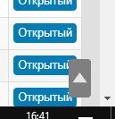
Не просто заменена визуализация, но и в коде изменены параметры
#2 Длина поля Глобального поиска
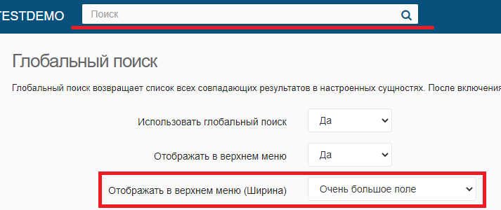
Возможность настроить длину глобального поиска, от очень короткого до самого длинного поля.
#3 Добавлена возможность Таймеру создания записей по его работе в отдельную подсущность
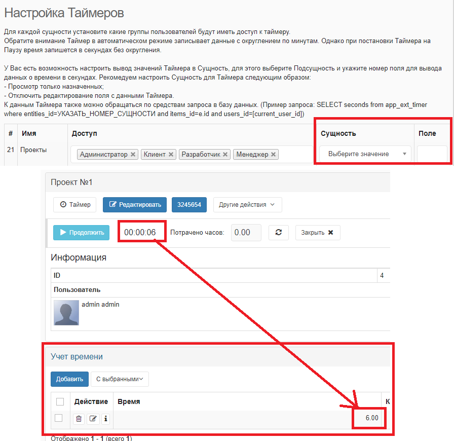
Теперь работая с Таймером, возможно отслеживать все циклы его работы (аналог работы в системе Битрикс)PS так же исправлена работа таймера в неактивной вкладке. (изначально в неактивной вкладке работа таймера замедляется! зависит от Браузера)
#3.1 Переработан алгоритм работы с Таймером
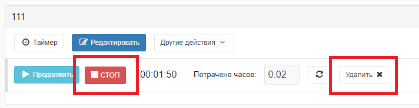
Подправлен Перевод и Алгоритм работы Таймера, а так же появилась возможность «Остановить-без продолжения», что в свою очередь позволяет оставив таймер, убрать его из списков запущенных таймеров и обращаться к данным таймера и работать с ними через запросы, что делает Таймер намного функциональное чем первичный вариант, предложенный разработчиком.
Так же теперь Таймер умеет сохранять данные на странице записи в Сущности.
PS так же исправлена работа таймера в неактивной вкладке. (изначально в неактивной вкладке работа таймера замедляется! зависит от Браузера)
Так же дабы не плодить новые настройки, решение по первичной настройке немного не ординарное!
#4 Возможность включить "Отображать как ссылку" в системных полях Пользователь, Создатель и Почта
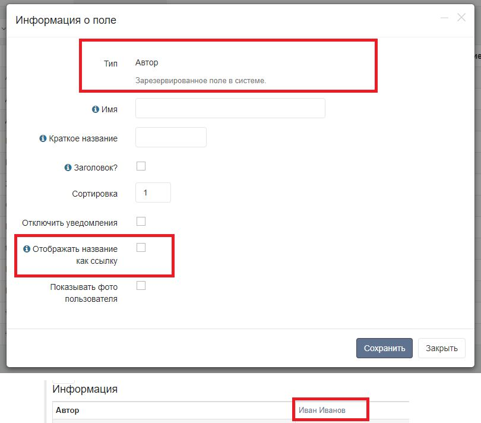
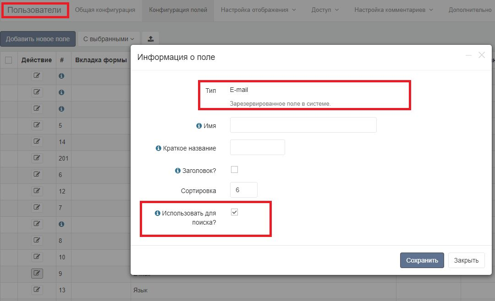
Теперь можно переходить в запись о Пользователе или запускать скрипт mailto при клике на почту Пользователя
#5 Всплывающие подсказки на кнопках Автоматизации.
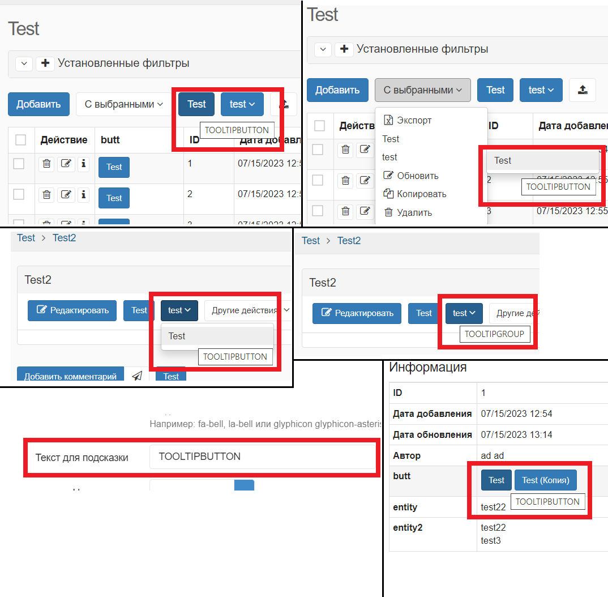
Добавлена возможность настроить всплывающую подсказку (tooltip) на кнопках Автоматизации и на Группы кнопок Автоматизации.
#6 Просмотр только своих комментариев
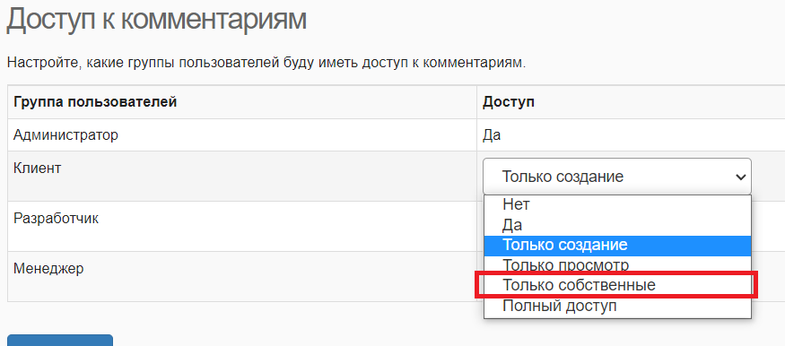
Показываются только свои комментарии
#7 Возможность скрыть поле Количество копий на форме ввода при использовании процесса Автоматизации Копирование записи.
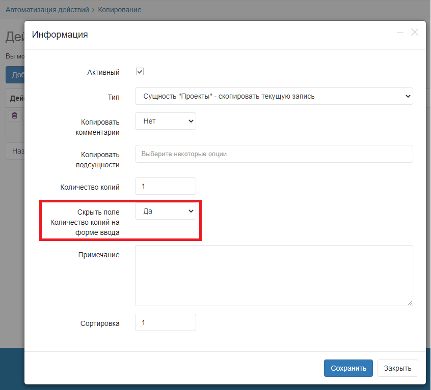
В процессе Автоматизации Копирование записи на форму по умолчанию выводится поле количество копий. Однако пользователь не всегда должен сам решать какое количество копий должно быть, и возможность отключить отображения данного поля было бы полезно. Данный момент позволяет реализовать данная доработка.
#8 Возможность включить поле Фильтров на странице записи по полю Связанные записи
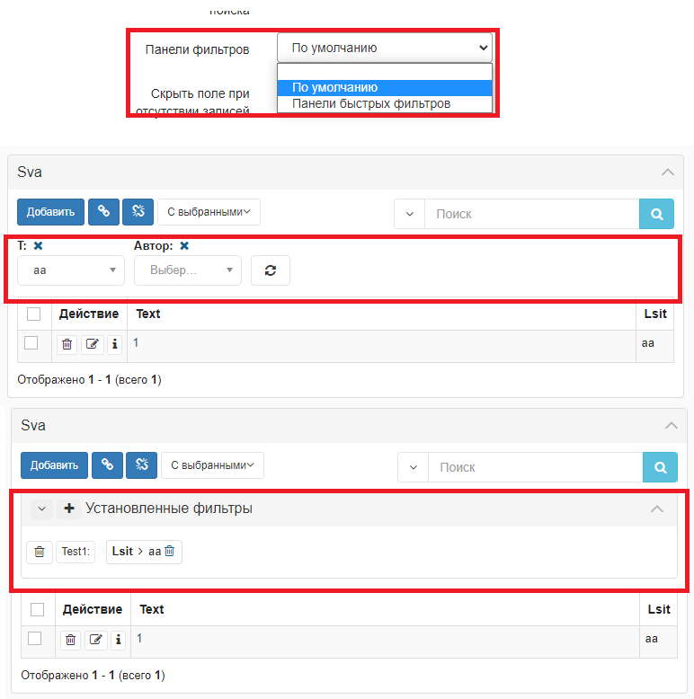
Если в связанных записях у Вас десятки записей поиск это хорошо, но использовать Фильтры это еще лучше.
Данная включает:
— возможность выбрать обычные фильтры и Быстрые фильтры.
— исправлены редиректы у кнопок, для правильного функционирования возврата.
#9 Возможность настройки отображения "Блока Информации" на странице записи в левой части страницы
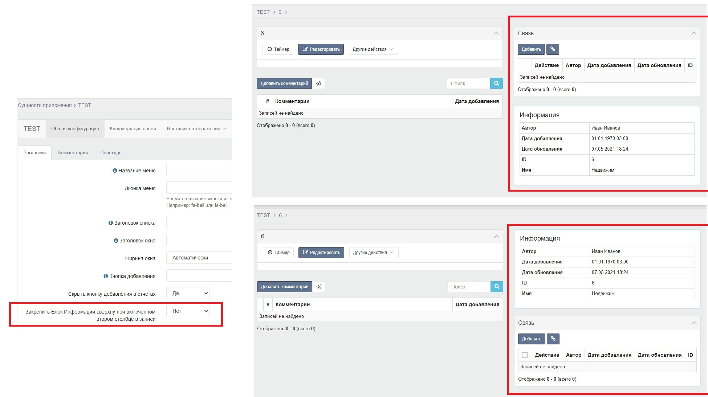
При делении страницы записи на 2 столбца иногда Информационный блок ранее отображался первым с конца, что иногда сказывалась на продуктивность и лишние действия по поиску данных.
#10 Возможность сортировать системные поля (ID, Владелец, Дата создания, Дата обновления) в настройках Формы сущности
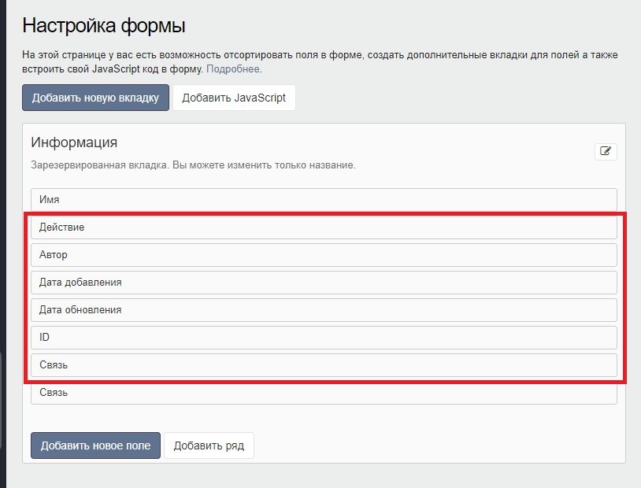
Если вы добавили кнопки перелистывания записей или Кнопки автоматизации, иногда полезно чтобы они были сверху, а не между данными.
#11 Возможность задавать размер фотографии пользователя во всплывающем окне
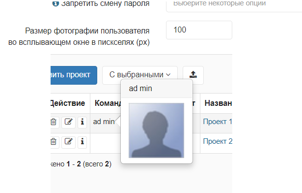
Позволяет задавать размер фотографии пользователя во всплывающем окне при наведении на поле с именем пользователя.
#12 Добавлена возможность изменять расположение полей в колонках на странице записи
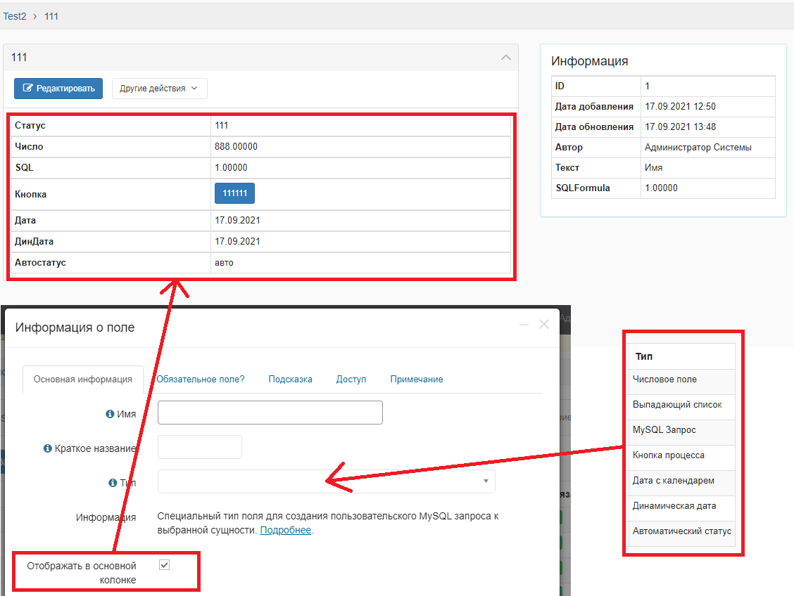
Теперь возможно изменять расположение полей в колонках на странице записи (Доступные поля: Числовое поле, Выпадающий список,MySQL Запрос, Кнопка процесса, Дата с календарем, Динамическая дата, Автоматический статус)
PS при необходимости список поддерживаемых полей можем расширить.
#13 Добавлены настройки по отображения в меню (в левом и верхнем) кнопки Календарей (Общий и Личных)
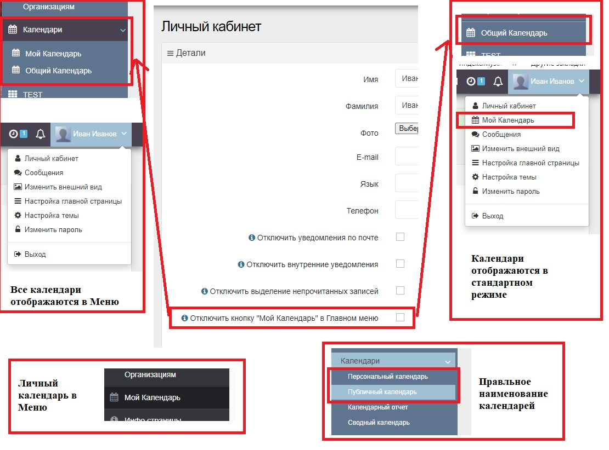
Теперь Вы можете настроить гибкое отображение календарей, а благодаря «правильному» переводу никогда не будете их путать
#14 Добавлена возможность настройки "Левого" Меню по Правам доступа
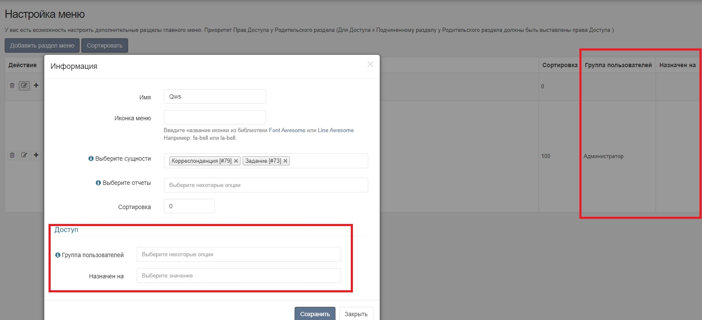
Возможность настроить показ позиций в меню, задав им права Доступа, что в итоге позволяет очень гибко настраивать меню, и скрывать от пользователей Сущности даже если они имеют доступ к ним.
#15 Добавлено в Информационные страницы раздача прав на редактирование для каждой страницы
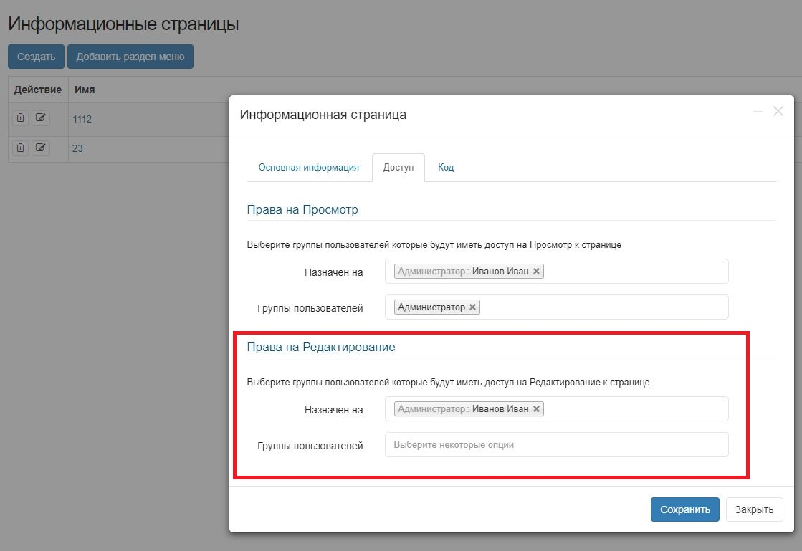
Расширяет границы работы с инструментом «Информационные страницы», позволяющие на каждую страницу назначать свои права пользователей.
#16 Добавлена настройка возможности расположения "Страницы" на Главной странице ниже всех фильтров
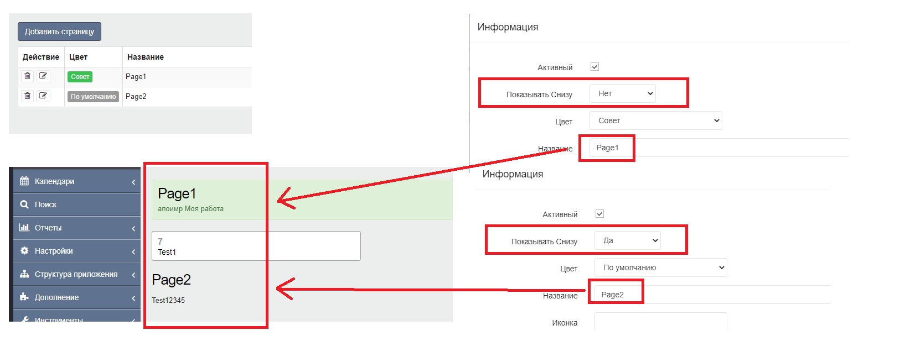
Позволяет на Главном экране Страницы опустить ниже выставленных фильтров, позволив тем самым более наглядно сделать оформление Главного экрана
#17 Добавлена кнопка копирования настройки "Общего отчета" в "Общие фильтры"
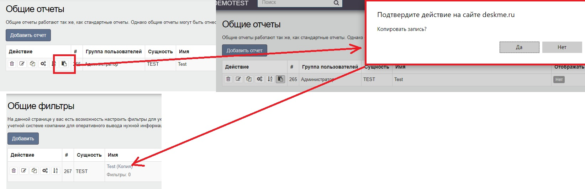
По умолчанию программе заложены Общие отчеты, которые можно вывести на Главный экран, и Общие фильтры, которые отображаются в таблицах Сущности. Но иногда они одинаковые и приходилось выполнять одни и те же действия по созданию повторно. Теперь такой не обходимости у Вас не будет, так как Вы сможете скопировать настройки.
#18 Возможность выбора группы "Администратор" для отображения в "Общие отчеты" и "Общие группы отчетов"
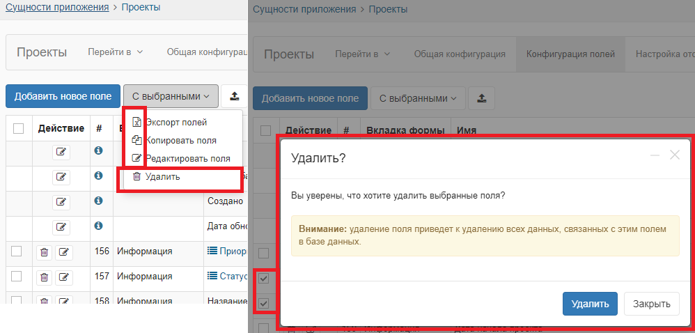
Данный функционал позволяет выделить несколько полей в настройках сущности и удалить их за один раз выбрав соответствующий пункт меню, а не на каждое поле нажимать удалить.
#19 Доработан модуль Telegram для возможности отправки сообщений при добавлении Комментариев
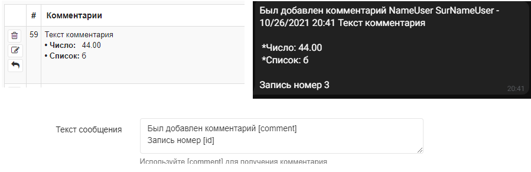
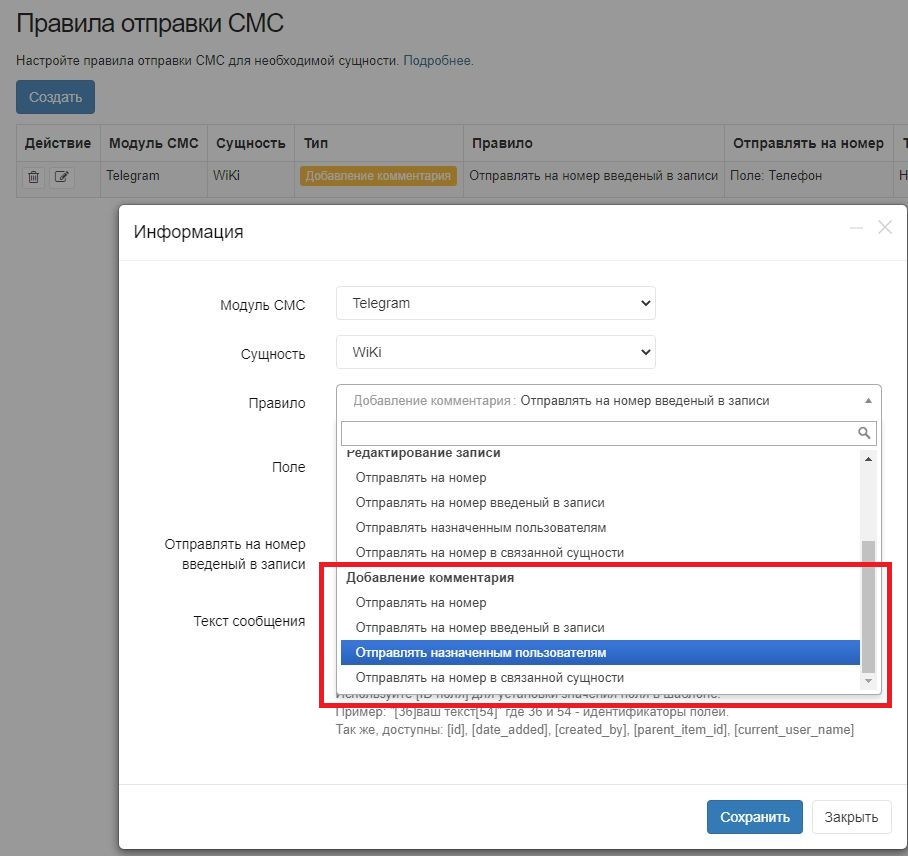
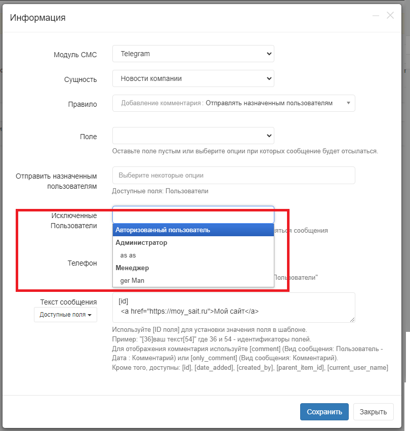
Появилась возможность получать Комментарии к записям, созданных в программе.А так же теперь есть возможность исключать конкретных пользователей из отправки! включая текущего пользователя в системе!
#20 Доработан модуль DaData для настройки дополнительных фильтров для выборок данных
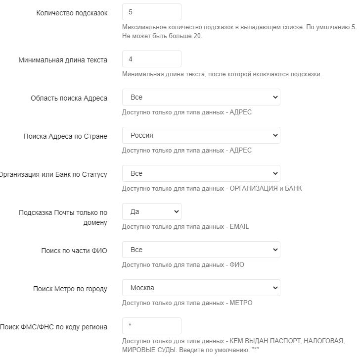
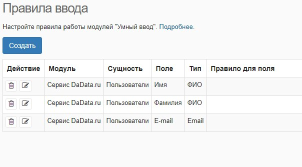
Позволяет более гибко настроить выгрузку данных из сервиса ДаДата
Появилась возможность использовать системные поля в сущности Пользователи
#21 Доработан модуль Чата (3 функции)
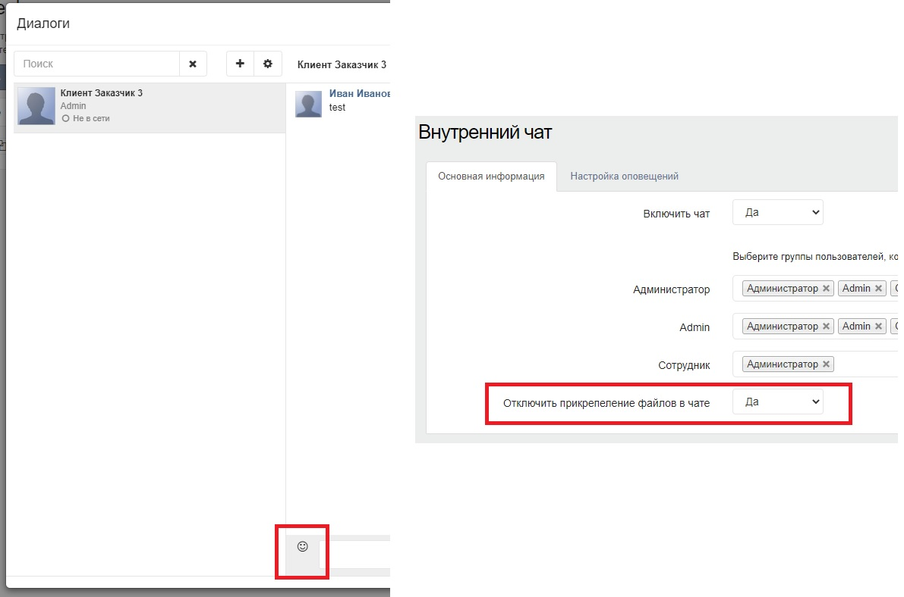
а)Позволяет отключить возможность отправки файлов, через чат для экономии места на сервере. Так как все файлы пересланные через Чат хранятся у Вас на Сервере и постепенно заполняют его.
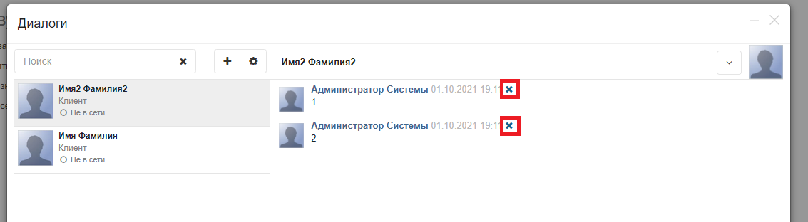
б)Теперь при общении в чате программы у Вас появилась возможность удалять сообщения в чате
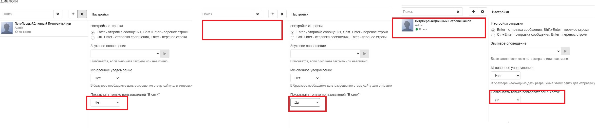
в)Позволяет скрыть не активных пользователей системы.
#22 Настройка размеров модального окна
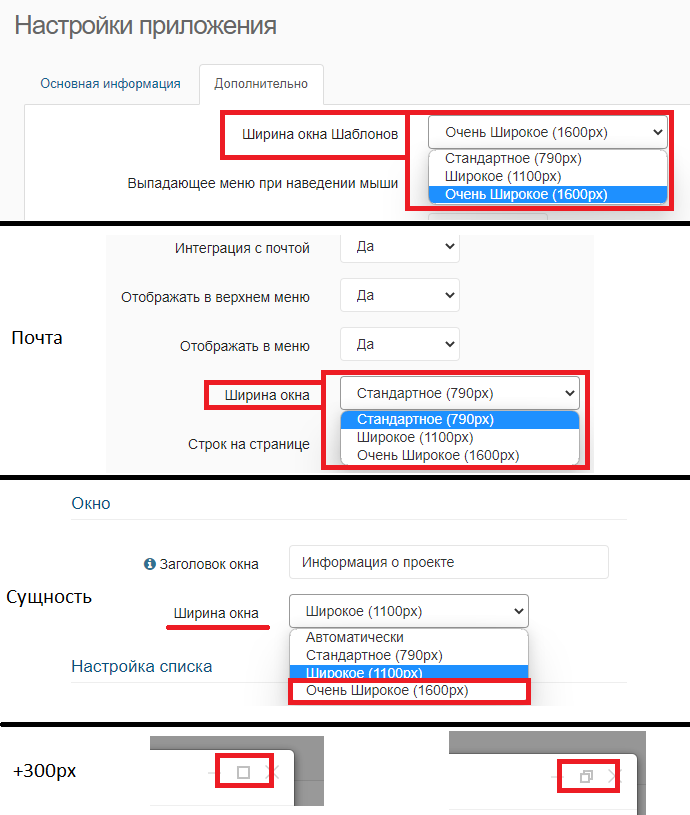
Данная доработка позволяет:
— Настроить размер окна у почтового модуля
— Настроить размер окна для Шаблонов
— Увеличено количество размеров окна у Сущностей до 4х вариантов. Плюс стало более понятно какого размера окно будет.
— Добавлена кнопка расширить окно, к текущему размеру прибавится +300px. При это если изменить размера окна браузера форма приобретает первоначальный размер
#23 Возможность сворачивать блок быстрых фильтров
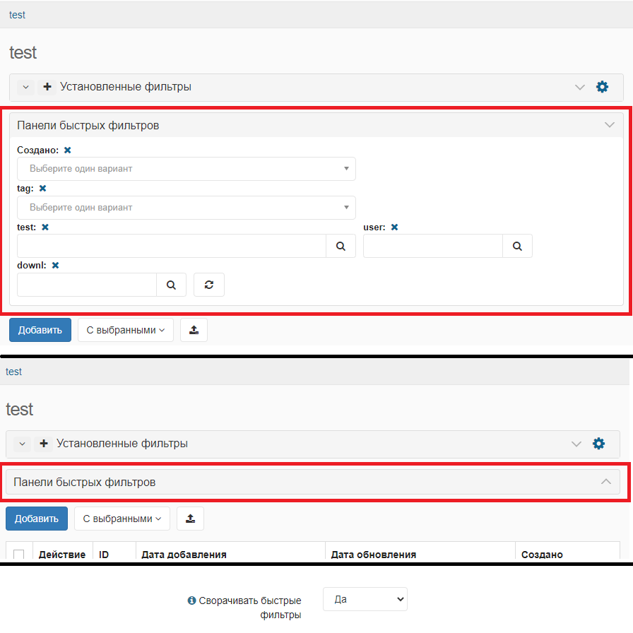
Данная доработка позволяет включить отображение быстрых фильтров в отдельный блок, по аналогии с обычными фильтрами, который можно сворачивать для сокращения места на страницах системы
#24 Доработанный модуль Сводные отчеты (не путать со Сводными таблицами) для отображения быстрых фильтров
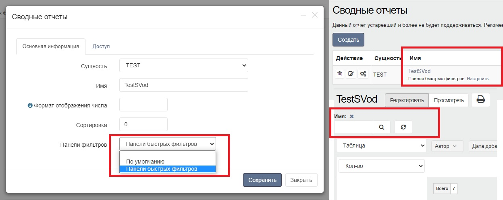
Добавляет удобство использования заранее настроенных фильтров.
#25 Дополнительные возможности настройки маски ввода в полях Телефон и Поле с маской ввода.
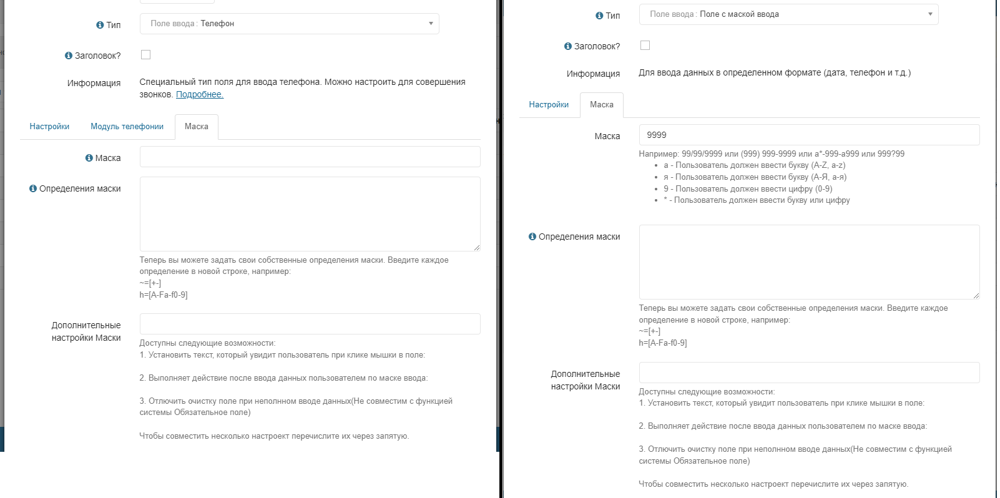
-Доработана система подсказок в системе
-Добавлена возможность установить текст, который увидит пользователь при клике мышки в поле
-Добавлена возможность выполняет действие после ввода данных пользователем по маске ввода
-Добавлена возможность отключить очистку поле при неполном вводе данных(Не совместим с функцией системы Обязательное поле)
-Добавлена возможность создать собственное определение маски
PS так же вы узнаете о динамических свойствах маски
#26 Возможность выводить PHP код в блок на странице записи
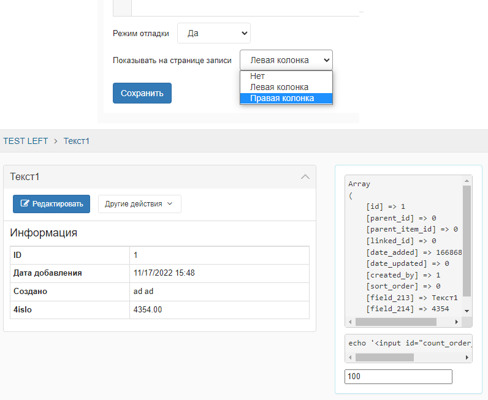
Благодаря данной доработке вы можете вывести свой код php на странице запись в отдельном блоке либо в правую колонку, либо в левую.
#27 Доработан функционал Правила отправки почты
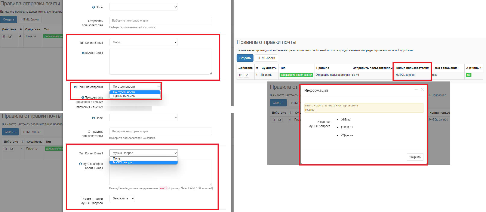
Данная доработка включает все себя два улучшения:
1. Добавлена возможность выбора принципа отправки сообщений пользователю. В базовом функционале программы отправка сообщения осуществляется каждому адресату в отдельном письме с указанием только данного пользователя в получателях. Благодаря данной доработке вы можете выбрать вариант, когда будет отсылаться одно письмо, в котором будут указаны все получатели разом. Таким образом вы получаете следующие преимущества:
а) Пользователь в письме видит всех получателей в письме и будет уверен, что все заинтересованные лица так же получили сообщения.
б) Снижается нагрузка на сервер, за счет количества отправок, что приведет к меньшей вероятности блокировки отправки писем на стороне сервера
2. Добавлено поле Копия E-mail, в которое можно указать любые почтовые адреса, которые будут учтены при отправки сообщений, либо сделать собственный запрос к базе данной для получения почтовых адресов. При выборе принципа отправки «по отдельности» адресат получит такое же письмо с указанием своей почты в поле Адресах, а при «Одним письмом» адрес/адресы будут вставлены в поле Копия. На странице правил добавлена возможность проверить какие значения получаются по MySQL запросу.
#28 Доработан модуль Диаграмма Ганта+Быстрые фильтры
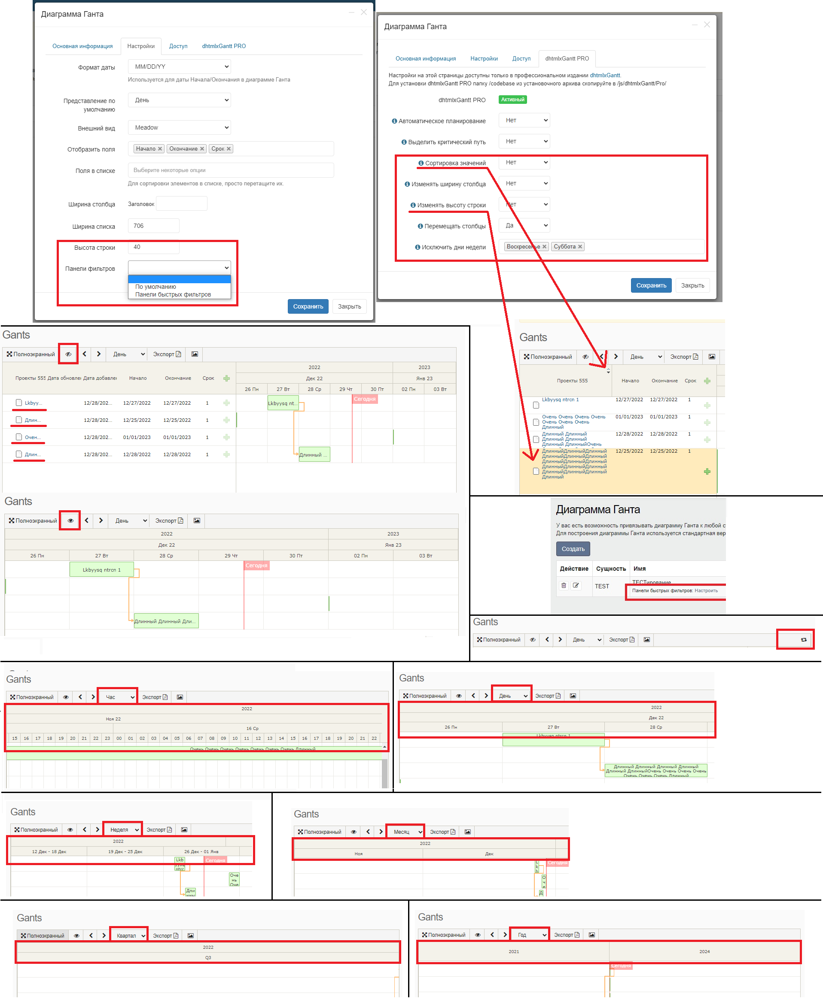
Список изменений:
— переработаны отображения графиков Час, День, Неделя, Месяц, Год и добавлен Квартал (Отображение теперь более соответствует названию и полноте данных)
— добавлена возможность включать фильтры (Обычные и Быстрые фильтры)
— добавлена возможность задать высоту строки
— добавлена возможность задавать ширину Заголовка в таблице
— добавлена кнопка скрытия табличной части графика (При изменении окна браузера, ширины кнопками и отображения автоматически включается отображение табличной части обратно)
— доработан момент отображения текста который не вмещается в таблицу и блоки (теперь если текст не вмещается по умолчанию к тексту добавляются три точки ‘…’)
— переработан логика работы кнопок изменения ширины таблицы. (Действие кнопок меняют ширину таблицы для каждого пользователя в отдельности и записывают данные значения в файлы сессии, а не в БД, т.е. на другом компьютере или при очистке куков изменения будут отменены и загружены базовые значения, и не меняют базовое значение заданное администратором в настройках отчета)
— добавлена возможность сортировки по возрастанию и убыванию значений в столбцах таблицы (работает в рамках ПРО версии. — Данные изменения не сохраняются, т.е. работают до обновления/перезагрузки страницы)
— добавлена возможность пользователю изменять ширину столбцов в таблице (работает в рамках ПРО версии. — Данные изменения сохраняются в файлах сессии, а не в БД, т.е. на другом компьютере или при очистке куков изменения будут отменены и загружены базовые значения)
— добавлена возможность пользователю изменять высоту строк (работает в рамках ПРО версии. — Данные изменения не сохраняются, т.е. работают до обновления/перезагрузки страницы. При этом текст начинает вписываться в столбцах и блоках)
— добавлена возможность пользователю сортировать столбцы в таблице (работает в рамках ПРО версии. — Данные изменения сохраняются в файлах сессии, а не в БД, т.е. на другом компьютере или при очистке куков изменения будут отменены и загружены базовые значения. При этот доступно изменение любых столбцов в таблице, а не только поля из пункта «поля в списке» )
— добавлена возможность исключать дни недели из отображения на графике (работает в рамках ПРО версии)
— добавлена кнопка обнуления настроек сессии (Позволяет сбросить произведенные настройки пользователем и загрузить базовые значения)
#29 Возможность прослушать загруженный звуковой файл и просматривать изображение на форме ввода
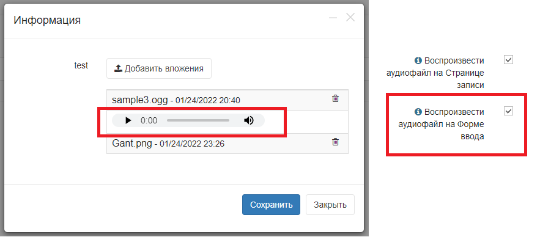
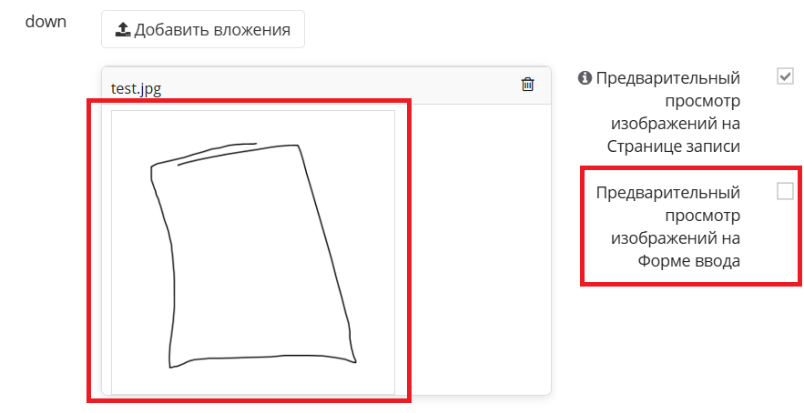
#30 Доработан процесс "Копирование записи" в Автоматизации с возможностью, указывать системное поле ID при копировании данных в поле "Сущности" и "поле Ввода"
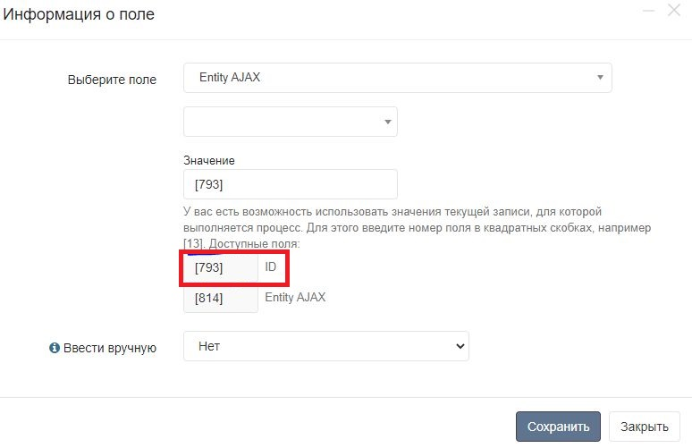
Благодаря данной надстройке Вы теперь сможете при копировании записи ссылаться на значение ID текущей записи. Так же по Вашему желанию можем включить привязку любых полей между собой.
#31 Поможем добавить кнопки Перехода между записями
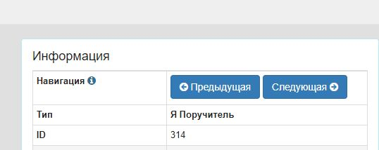
Расскажем, поможем, настроим Кнопки перехода между записями внутри Записей
#32 Единый формат отображения на записи полей "Пользователь" и "Пользователь AJAX"
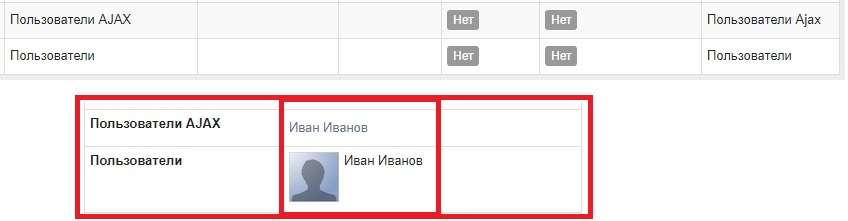
Единый формат отображения данных#33 Возможность удалить определенный текст в поле "Статический текст по шаблону"
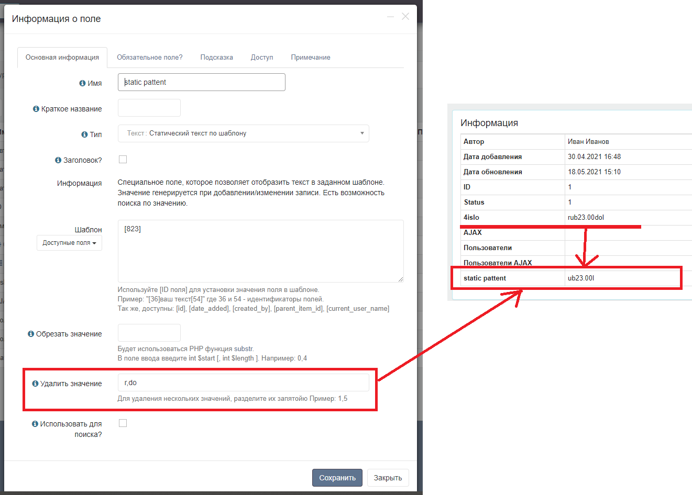
Иногда есть необходимость удалить некоторые символы в шаблоне, например когда Вам не нужны суффиксы и префиксы из других полей.#34 Возможность выбора Пользователей по умолчанию в поле Пользователи
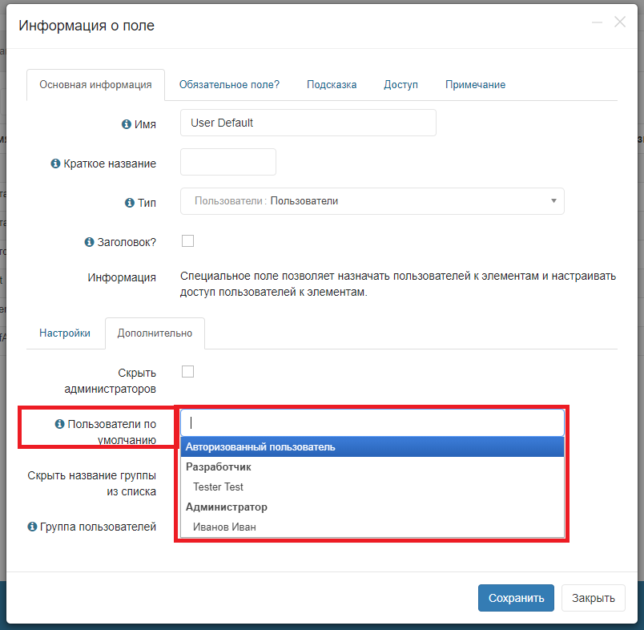
Теперь вы можете выбрать любого пользователя по умолчанию#35 Возможность при Публичной регистрации задавать Пользователей по умолчанию
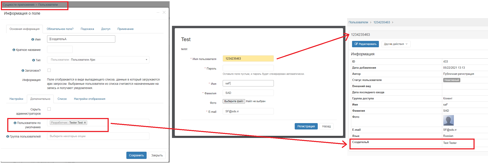
Возможность при Публичной регистрации назначить ответственного Пользователей по умолчанию (работает с учетом предыдущей доработки («Возможность выбора Пользователей по умолчанию в поле Пользователи»)
#36 Возможность выбора любого пользователя для оповещения при Публичной регистрации пользователя
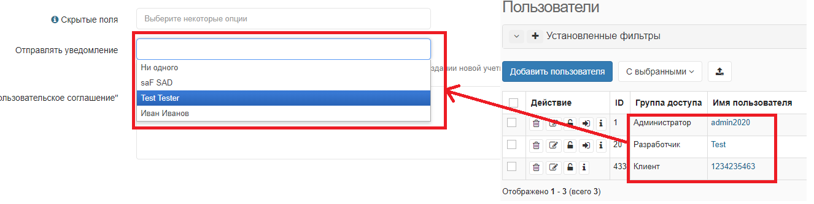
При публичной Регистрации можно включить уведомление на любого пользователя.#37 Возможность заходить под пользователем для различных групп.
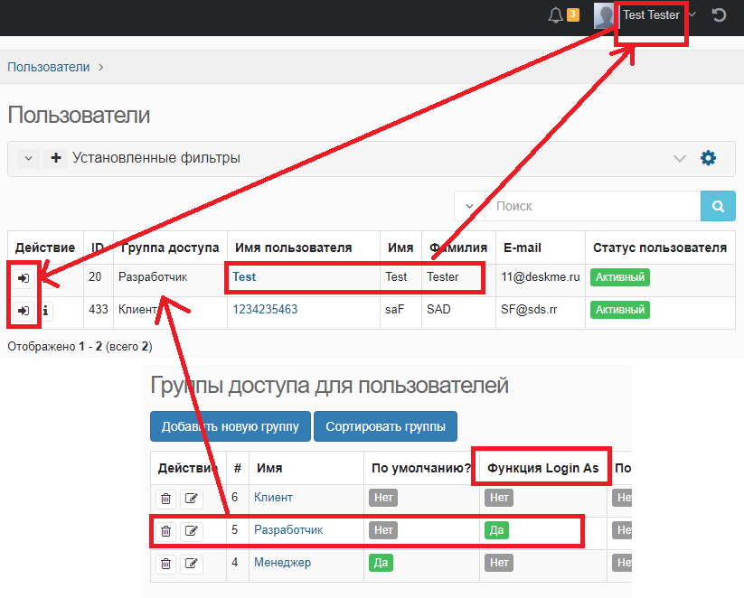
По умолчанию только группа Администратор имеет право заходить под другими пользователями не вводя пароль, данная доработка позволит задавать любые группы доступа с такой возможностью#38 Видимость записей через два поля ГП с Глобальными списками
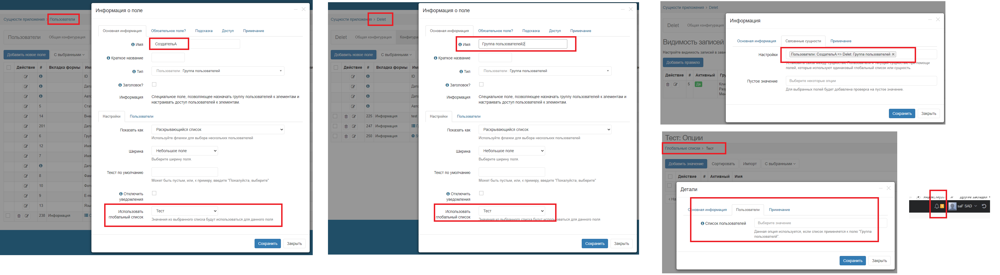
По умолчанию Система предлагает настроить Видимость и Оповещение в двух разных местах по определенной логике, но дальнейшее сопровождение данной системы будет сложной, так как данные о Пользователях будут задваиваться. Данная доработка позволяет исключить связь с Сущностью Пользователь по полю Выпадающий список#39 Видимость записей через ГП и Глобальный или Локальный Список (без привязки к сущности Пользователь)
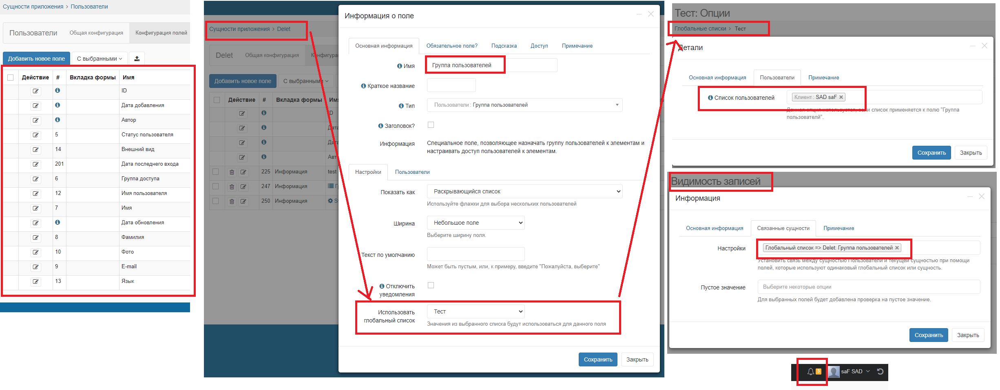
По умолчанию Система предлагает настроить Видимость и Оповещение в двух разных местах по определенной логике, но дальнейшее сопровождение данной системы будет сложной, так как данные о Пользователях будут задваиваться. Данная доработка позволяет: во-первых, использовать поле Группы пользователей при работе с Видимостью, а во-вторых уйти от привязки пользователя к значениям из Списка.#40 Видимость записей через Связанные сущности
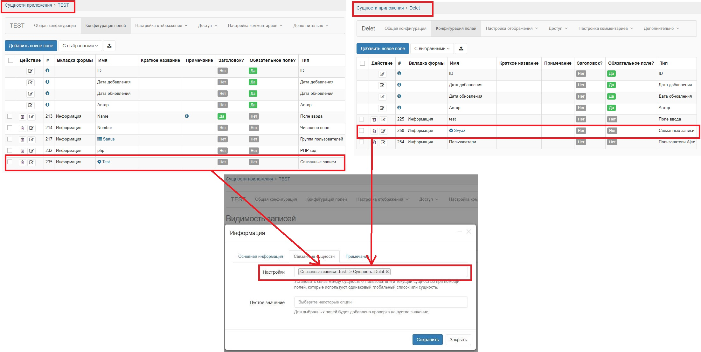
Позволяет передать через поле Связанные записи прочитать привязанных пользователей к Сущности №1 и тем самым отображать записи в сущности №2 (как если бы в сущность №2 проставить таких же пользователей)(PS в моем случаи работает, но возможно учтены не все условия работы работы)
#41 Добавление данных в запись средствами Автоматизации
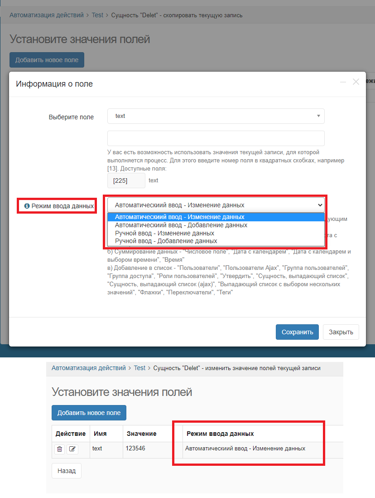
Иногда возникает необходимость Добавить текст/данные заготовленные заранее к существующему заполненному полю в записи, данная доработка позволяет провернуть такой фокус. (PS работоспособность проверена в процессах Изменения/Копирования)
#42 Переработанный Отчет История Изменений
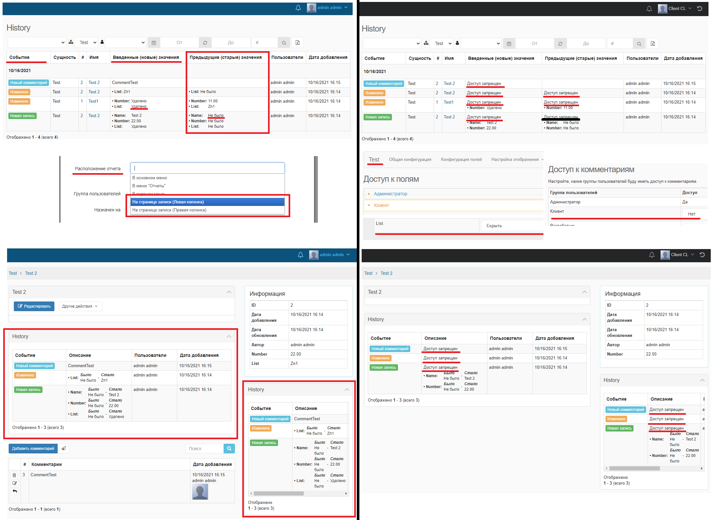
Благодаря данной настройке Вы теперь можете полностью отслеживать изменения с записью в системе, а если более подробно то:— Отображение раннее введенных значений (в базовом версии программы нет данной возможности)
— Возможность выводить отчет изменений на страницу записи в виде таблицы, с возможность ее расположения как справа так и слева в интерфейсе, по конкретной записи.
— Учитываются права доступа к комментариям, т.е. если есть доступ к комментариям, то в отчете можно будет увидеть их, иначе будет написано Доступ запрещен. (в базовой версии программы было слабым местом в данном вопросе)
— Подстановка текстового описания (такие как «Удалено», «Не было», «Доступ запрещен») в замен пустого значения поля
— Изменен перевод, который отражает теперь более понятную суть содержания полей данных
#43 Возможность раздавать права на просмотр значений Локального и Глобального Списка
Появилась возможность задавать видимость Значений (При этом если не назначены права то Значения видят Все пользователи)
#44 Показывать фотографию пользователя в поле Created_by (+ п.4ч)
Возможность включить показ фотографии пользователя в поле Created_by. В данную доработку также включена доработка в части — Возможность включить «Отображать как ссылку» в системном поле Создатель»
#45 Добавлены фильтр по дате и экспорт в Excel для Инструмента Журнал входа пользователя
В журнал входа пользователя добавлено:
- фильтр по дате
- возможность экспорта данных
#46 Вывод значений id записей структуры Дерева
Теперь можно более расширенно использовать SQL при работе с деревом, не смотря на отсутствие рекурсии (т.е. получается «недорекурсия»)) Можно использовать спец функцию в SQL формуле или использовать поле «Вычисления с вложенными записями».
#47 Удаление неcкольких полей и пользователей
Возможность удалять сразу несколько выбранных полей в настройках сущностей. При этом если какое-то поле уже используется, то будет выведено стандартное сообщение о не возможности выполнить операцию.
#48 Возможность в поле "SQL Запрос" использовать конструкцию JOIN
Возможность в поле «SQL Запрос» добавлять и использовать конструкцию JOIN при формировании запроса к базе данных, для выборки данных из разных таблиц одновременно
#49 Переработан модуль Интеграция с почтой
Изменения которые были внесены в базовую версию модуля:
— Добавлена возможность указывать при отправлении письма поля Копия и Скрытая Копия.
— Переработан механизм отправки письма, теперь во входящем письмо отображаются все адреса указанные в поле Кому (в том числе и указанные в поле Копия)
— Добавлена возможность создавать пользовательские папки
— Добавлена возможность включать фильтрацию входящих писем по папкам пользователя
— Добавлена возможность самостоятельного перемещения писем между папками пользователя
— Добавлена возможность включить отображение всех входящим в папке Входящие, не зависимо от их сортировке по папкам пользователя, или наоборот показывать в папке Входящее только те письма которые не были отсортированы.
— Добавлена возможность разрешать пользователю самостоятельно исправлять подпись в письме
— Добавлена возможность разрешать пользователю самостоятельно установить количество писем на странице
— Добавлено диалоговое окно подтверждения при удалении письма
— Переработано сообщение об ошибках в теле письма для лучшего восприятия.
— Возможность настроить в количество почтовых ящиков для забора входящих писем за одно действие cron, а так же IMAP флага для настройки забора почты.
— Возможность выбирать почтовые адреса пользователей сущности Пользователи при составлении письма.
— Добавлена окно для управления адресной книгой аккаунта, которое позволяет просматривать, добавлять, редактировать, удалять, копировать и искать имеющиеся почтовые адреса используемые в модуле Интеграция с почтой
Бонус: исправлена строка поиска самих писем
#50 Возможность задавать свои условия выборки данных при связывании записей через поле Связанные записи.
Возможность ограничить данные в выпадающем списке, при установки взаимосвязи между сущностями используя поле «Связанные записи»
#51 Возможность отображать Секунды в поле "Время" и вводить их в режиме Ввода данных
Возможность отображать и вводить Время с точностью до секунд. (PS Ввод через режим «Календарь» не поддерживается)
#52 Возможность задавать Группу доступа пользователей, для входа в систему без пароля, по прямой ссылке.
Если Вы хотите предоставить доступ в программу без пароля сразу нескольким пользователям, то благодаря данной Доработке, вы можете выбрать Группу доступа пользователей, Пользователи которой смогут входить в систему по прямой ссылке зная только свой Логин(Имя пользователя)
#53 Возможность включить учет Дней недели и Праздников в полях Дата
Благодаря данной возможности, при выборе пользователем Даты, попадающей на Праздники или определенный День недели, Данная дата будет Автоматически изменена на ближайшую рабочую Дату. Так же данную особенность можно учитывать в поле Динамическая дата используемое при расчетах с Датами.
#54 Добавлен Импорт/Экспорт в настройках Праздничные даты
Благодаря данной доработки у Вас появится возможность Импортировать и Экспортировать списки с данными о Праздничных датах, а так же дополнительно появилась возможность удалять отмеченные Даты одним нажатием.
#55 Добавлена команда get_name в SQL формулах, которая возвращает имя значения из списка
Благодаря данной функции, теперь Вы можете без труда получить Имя значения из Локального списка (аналог родной функции get_value для получения значения)
#56 Возможность выбрать отображение всех инструментов в поле "Поле для текста с редактором"
Позволяет отобразить все возможные настройки по редактированию текста в поле «Поле для текста с редактором».
В купе с доработкой №2, так как в ней используется CKEditor 4.16, инструментов для редактирования текста будет значительно больше!
#57 Возможность объединять ячейки вертикально в настройках "Шаблоны для экспорта" для файлов Docx
Добавлена возможность объединять ячейки в Шаблонах для экспорта DOCX не только по Горизонтали, но и по Вертикале. Попутно внес исправление в отображение Эскизов таблицы в системе (ранее всегда показывалась ровная таблица!)
#58 Возможность сортировать выпадающий список Пользователей в полях Пользователи и Пользователи AJAX
Появилась возможность при необходимости отсортировать выпадающий список Пользователей находящихся в полях Пользователи и Пользователи AJAX в отличии от заложенной в систему сортировки
#59 Возможность использовать данные Пользователя в условии полей Сущность AJAX и Пользователи AJAX.
Данное нововведение позволит фильтровать выпадающие списки полей Сущность AJAX и Пользователи AJAX с учетом данных, которые находятся в сущности Пользователя.
Так же добавлена возможность включить режим отладки для поля Пользователи AJAX
#60 Отображение колонки "Ширина колонки" в "Настройка Списка-Список"
Если у Вас много колонок, то вы можете запутаться, где прописали ширину а где нет. Чтобы избежать данной путаницы существует данная доработка, которая отображает в панели настроек ширину колонок.
#61 Возможность вывод картинки в файл Эксель при экспорте записей из сущности
Ранее при импорте вставлялось название картинки, но с этой Доработкой теперь у Вас есть выбор вставить только название или вставить саму картинку!
#62 Вывод типа поля в подсказках выбора полей при настройках полей/автоматизации
Иногда в подсказках при настройке системы удобно видеть не только Название и Номер поля, но и его Тип поля.
#63 В интерфейсе Администратора добавлены кнопки быстрого перехода к настройке полей Сущности в Боковом меню рядом с названием Сущности, а также номер Сущности
При настройке системе Вы часто переключаетесь между Сущностью и ее Настройками, и чтобы сэкономить количество действий мышкой при переключении, и чтобы упростить все это была создана данная доработка, которая позволяет:
— Вывести кнопками быстрого перехода к настройкам полей Сущности в меню
— Вывести в пунктах меню номер Сущности
— В названии каждой Сущности на странице с записями вывести так же кнопку быстрого перехода к настройкам полей Сущности
— На странице записи, вывести в названии поле его id номер в системе
— Вывести в номер Сущности, в настройках Сущности
— Быстрый переход к настройкам полей Сущности в меню из Настройка страницы записи->Связанные сущности по полю Сущность (действует постоянно)
Данные возможности можно включить или выключить для Администратор (кроме последнего пункта)!
#64 Добавлена возможность вывода в списке записей Сущности таблицу связанных записей
По умолчанию в поле Список записей можно было вывести только количество или заголовки. Для ускорения работы и быстрого анализа данных, данная доработка позволит вывести в поле Связанной записи таблицу с данными, которые видны и на странице Записи, в таблицу Сущности
#65 Доработан процесс Автоматизации "Клонирования" записей
Теперь при выполнении процесса клонирования Вы можете задавать условия клонирования записей (Как Связанных сущностей так и Подчиненных сущностей). А так же появилась возможность клонирования сразу все записи Родительской сущности (так же с учетом условий)
#66 Количество знаков после запятой значения "Валют" в форме по настройкам поля "Числовое поле"
Теперь округление зависит от выставленного значения в поле, а не жестко привязано как изначально
#67 Возможность различного отображения названий вложенных сущностей на странице записи
Если у Вас много вложенных сущностей и Вы хотели чтобы они отображались более компактно, или Вы просто хотели иконки как в меню, то данная доработка для Вас.
#68 Доработано поле "Значение из родительской сущности" с возможностью отображать значения из любой вышестоящей Сущности и возможностью Быстрого перехода в запись
Теперь есть возможность быстро и без заморочек выводить данные из любой Родительской сущности. А так же реализован функционал быстрого перехода к записи Родительской сущности.
#69 Отображение количества записей по условию в Боковом меню рядом с названием Сущности
Появилась возможность увидеть количество записей в соответствии определенному условию не заходя в саму Сущность
#70 Добавлена возможность в поле Связанные записи игнорировать права доступа Сущности
Добавлена возможность игнорировать правда доступа Сущностей:
- текущей сущности где находится поле
- сущности, на которую ссылается поле
То есть, теперь вы можете настроить возможность работы с данными полей не зависимо от настроек доступа в Сущностях.
#71 Возможность задавать фильтры для Глобального поиска, а так же быстрый фильтр на странице Глобального поиска
Позволяет отфильтровать в Глобальном поиске не нужные данные. Кроме того на странице Глобального поиска благодаря Быстрому фильтров стало легко переключаться по нужным Сущностям.
#72 Функция БАН-БД, для предоставления доступа определенному пользователю "Только для ЧТЕНИЯ" во всех настроенных и доступных Сущностях и Отчетах.
Позволяет перевести доступ определенного пользователя во всех настроенных и доступных ранее Сущностях и Отчетах в режим «Только для ЧТЕНИЯ» в определенной Группе доступа пользователя. В базовом варианте, для реализации доступа «Только на ЧТЕНИЕ» определенному сотруднику, Вам бы пришлось создать дополнительную Группу доступа пользователей и долго и усердно настраивать ее по снова, а благодаря данному дополнению реализовать данный доступ можно в пару кликов.
#73 Добавлена возможность в поля Пользователи и Пользователи AJAX добавлять новых Пользователей через кнопку "+"
Теперь у Вас есть возможность добавлять Пользователей через поля Пользователи и Пользователи AJAX.
PS так же исправлена функция обновления данных в полях, если на на форме есть поле Сущность (ссылающаяся на Пользователей) и поле Пользователи.
#74 Доработка отображения значений записей на форме ввода и на на странице записи в полях Сущности AJAX и Пользователи AJAX
Данная доработка призвана сделать следующее моменты работы программы:
1) Исправлен баг отображения поле 12 (Имя пользователя) при ссылки на Сущность Пользователи — теперь как и было ранее отображается Имя Фамилия.
2) При выборе записи в списке, на Форме ввода в поле вставляется такое же значение как и в списке, а не заголовок как ранее. Таким образом мы на имеет однотипное представление данных.
3) В поле Сущности AJAX добавлена настройка шаблона отображения данных на странице записи, по аналогии с полем Пользователи AJAX.
#75 Организован Доступ к информации из другой группы доступа пользователя, при условии включения в данную группу, если в системе используется назначение несколько несколько групп на пользователя.
Как работает:
— Пользователю входящий в несколько Групп пользователей — может переходить по прямым ссылке на страницы, при условии что в настройках Сущности в разделе ДОСТУП-НАСТРЙОКА ДОСТУПА, одной из групп пользователей дан доступа. При этом у него будет отображаться на странице дополнительный текст: «Полный доступ к данной странице доступен вам под группой доступа: ГРУППА ДОСТУПА. !!ВНИМАНИЕ: сейчас у Вас ограниченный вид отображения информации!!»
— Так же если запись ограничена по настройкам Сущности в разделе ДОСТУП-ВИДИМОСТЬ ЗАПИСЕЙ, то пользователь так же по прямой ссылке может перейти на страницу и увидеть тот же самый дополнительный текст. (Однако: данный подход получился реализовать с учетом прост обхода настройки ВИДИМОСТЬ ЗАПИСЕЙ, т.е. перейти можно на любую запись, если даже для всех установленных групп пользователей стоят правила)
Для чего:
Когда пользователю приходит уведомление (колокольчик) или ссылка — он может спокойно перейти на запись и посмотреть что там написано!!! а уже при необходимости уже переключить права доступа и редактировать. (PS права кстати доступа кстати можно считать на изменение — я изначально ограничил только просмотром!!)
PPS заодно убрал кнопку «Сменить группу доступа» из меню когда функция отключена!
#76 Быстрые фильтры на странице Избранное и Мои уведомления
Добавляет на страницы Избранное и Мои уведомление панель Быстрого фильтра, для переключения по сущностям.
#77 Подсветка цветом полей в таблице с использованием полей Поле ввода и Поле для текста
Иногда все же требуется подсвечивать поля в таблице имеющие определенные текстовые значения.
PS можем добавить и другие поля при необходимости!
#78 Возможность использовать в Настройках видимости записи поле Поле ввода
Теперь можно использовать и поле Поле ввода
PS можем добавить и другие поля при необходимости!
#79 Возможность использовать в Правилах отображения полей в форме поля Поле ввода и Числовое поле
Теперь можно использовать также и поле Поле ввода и Числовое поле
PS можем добавить и другие поля при необходимости!
#80 Добавлено отображение в Настройке формы ввода дополнительной информации поле (Id номер и Тип поля)
Позволяет находясь на странице Настройка формы ввода видеть не только название поля, но и Id номер, и его Тип
#81 Добавлена кнопка Тестирование формы в настройках Сущностей в разделы Конфигурация полей и Настройка формы
Данная кнопка позволяет значительно ускорить время тестирования формы, так как позволяет сразу же перейти на нее.
#82 Переработано меню Правила распределения доступа
Полностью переработан раздел меню настроек Сущности Правила распределения доступа:
- Возможность выбора различных полей
- Возможность использовать одновременно разные поля- с различными условиями
- Возможность скрывать поля полностью от пользователей (данные не будут на странице записи и в списках/таблицах, а так же даже в коде, в отличии от настроек Правил отображения полей в форме)
#83 Увеличено количество вариантов выбора значений Ширины колонки при настройке Формы
Возможные варианты представлены на скриншоте. Теперь у Вас есть больше вариантов как сделать расстановку полей в форме ввода
#84 Доработка расширяет функционал полей "Сущность", "Сущность AJAX", "Сущность по SQL" по средствам вывода информации в виде таблицы данных в списке записей и на странице Записи
Благодаря доработки мы получаем возможность увидеть не только Заголовок связанной записи, но и все данные по ней в Табличной форме как в списке записей, так и на странице записи, что фактически нас приводит к аналогии с полем Связанные записи. Однако поле Связанные записи не может обеспечить ввод данных через Форму ввода, с возможностями по контролю обязательного заполнения данных, или динамической взаимосвязи данных.
таким образом мы получаем очень универсальный инструмент для работы, который по новой открывает границы применения данных полей.
Что умеет:
Доработка коснулась сразу трех полей «Сущность», «Сущность AJAX», «Сущность по SQL».
Возможность отображать связанные записи в виде таблицы как на странице записи, так и в списке записи.
Возможность управлять связанными записями прямо из Табличного вида. (редактирование, удаление, экспорт, обновление, копирование как одного так и нескольких элементов сразу)
Возможность добавить новую запись в связанной сущности с привязкой к текущей открытой записи.
Чего нет:
Процесс копирования связанных записей через Таблицу, автоматически не привязывает новые скопированные записи к Текущей открытой записи!
#85 Расширен функционал поля Автоинкремент
Включает в себя:
— Возможность разделять по Годам. Позволяет каждый год вести нумерацию с начало.
— Возможность задать количество нулей впереди цифр (своего рода шаблон). Позволяет реализовать конструкцию типа 0001, 0002.
— Возможность писать свой php код в поле Суффикс. Позволяет менять суффикс динамически в зависимости от условия (например проставлять год).
— Ну и на последок заодно поправлены поля настроек, в которые можно вписывать только числа, без возможности писать символы в них)
#86 Формат ДД.ММ.ГГГГ отображение даты в полях "Дата с календарем" и "Дата с календарем и выбором времени"
Теперь в поле у Вас отображается правильный формат даты ДД.ММ.ГГГГ.
#87 Возможность отключить ссылки на прикреплённые файлы в базовом письме уведомления
#88 Измененный интерфейс страницы входа
либо еще более современный вариант
Если Вам не нравится страница авторизации, то ее можно заменить на ИМХО более удобную в плане расположения кнопок.
#89 Добавление кнопки сокрытия Правого блока на странице записи
Благодаря данной настройки Вы сможете временно скрывать Весь Правый блок на странице записи не зависимо от того что там расположено и как он настроен.
#90 Возможность вращать иконки в Главном меню:
Настройка позволяет включить вращение иконки при наведении на пункт меню.
#91 Возможность выбора поля Ввода в настройках фильтров
Если вы хотите настроить например Общие фильтры, но с использованием поля Ввода, то в базовом функционале вы не сможете выбрать данное поле так его там нет, но благодаря данной настройке вы можете осуществить данный момент в настройках.
#92 Добавлена возможность в Настройках главной страницы, выбирать любую сущность для вывода информации на Главную страницу
Теперь на Главную страницу (он же Dashboard) можно вывести любые данные из любых Сущностей, где есть пользователи. При этом если несколько записей ссылаются на пользователя, то данные объединятся и выведутся на экран через запятую.
PS:
— Символ разделения при необходимости могу поменять.
— Числовые значения так же перечисляются через запятую
— Проверял на стандартных полях (ВВОД, ЧИСЛО, ДАТА, СПИСОК, SQL, ПОЛЬЗОВАТЕЛИ) на специфических полях, возможно потребуется незначительная корректировка)
#93 Возможность экспорта данных родительской сущности, с вложенной подсущностью
Данная доработка дает возможность выбирать выполнить экспорт родительской сущности или с подсущностью. При этом возможно выбирать подсущности любой степени вложенности.
#94 Возможность изменить иконки в системных пунктах меню
Теперь у Вас есть возможность изменить иконки (в том числе задать вращение) в 4х системных пунктах меню:
-Главная страница
-Отчеты
-Календарь
-Настройки
#95 Расширен функционал поля Утвердить путем добавления дополнительных вариантов согласования
Расширение включает в себя следующие доработки:
— Возможность выбора только определенных групп пользователей для списка
— Добавлены кнопка «Утвердить с Замечаниями»
— Добавлены кнопка «Отказать»
— Добавленные кнопки можно отключать, а так же для каждой добавлен свой комментарий
— Автоматизация сработает только если статус Утвержден или Утвержден с замечаниями
— Три вида отображения кнопок в поле. (по аналогии с полем Кнопок)
— Немного поправлен перевод у окна Подписи
— Переделал полностью логику фильтра по Полю, с учетом нового функционала
-Быстрые фильтры по статусу
#96 Добавлена возможность отключить вид Таблица в настройках отображения - Настройка списка
Если вы не используете вид Таблица в Сущности, то по умолчанию вы не могли его отключить и у Вас всегда были кнопки переключения вида. Данная доработка устраняет данный недостаток и позволяет отключить вид Таблица, тем самым избавив интерфейс от кнопки переключения вида.
#97 Возможность скрывать отображение конкретного ЭТАПА или АВТОСТАТУСА в дорожной карте на странице записи.
Появилась задать условие по которому конкретное значение Этапа/Автостатуса будет скрываться на странице записи по какому-либо определенному значению.
#98 Возможность сортировки Связанных сущности по полю Сущность на странице Записи
Теперь есть возможность сортировать как нужно Администратору, а не зависеть от времени создания полей!
PS дабы не плодить новые настройки, решение немного не ординарное!
#99 Добавлена возможность выводить события из календарей на Текущий день в виде таблицы на Главную страницу
Данная доработка включает в себя:
— Возможность выводить события из Общего и Личного календаря на Текущий день в виде таблицы на Главную страницу
— Возможность быстрого редактирования записи в календарях с Главной странице
— Возможность быстрого перехода в календари с Главной странице
— Исправлен перевод, чтобы различать календари между Личным и Общим
— В календарях добавлена кнопка быстрого переключения между календарями
— Верхняя иконка уведомлений выводит данные на Текущий день из двух календарей, а не только из Личного.
— Из Верхней иконки удалена кнопка перехода в Личный календарь за ненадобностью.
#100 Добавлена возможность выравнивать поля в режиме таблица (слева, справа, по центру) через настройки поля.
Благодаря данной доработке Вам теперь нет необходимости мучаться с CSS и искать как же там задать выравнивание текста в таблице, теперь Вы можете сделать это в настройках программы, а именно:
— Возможность в настройках поля задать как будут выравниваться данные в самой таблице.
— Возможность в настройках поля задать как будут выравниваться данные шапке таблице.
— Так же увеличена длина поля Кратное название поля.
#101 Возможность выделить цвет заливки строки поля в настройках полей Сущности для более информативного представления данных
— Возможность выбора цвета заливки строки, при этом цвет текста будет менять (на черном фоне белый текст, на белом фоне черный текст)
— Поправил столбец Примечания, теперь туда выводится текст из примечания, и если длина больше 10 символов то он сокращается до 10 знаков и появляется значок информации, который как и раньше выводил весь текст
#102 Выбор символа разделения значений в поле Сущность, Сущность AJAX, Многоуровневый список сущностей.
При множественном выборе значений, данные значения перечисляются с новой строки, что не всегда удобно, если их очень много, и есть необходимость просто их перечислить в строке.
#103 Добавлен отчет по запущенным таймерам в системе (родной таймер системы)
Позволяет в одном месте сразу увидеть все запущенные таймеры по всем записям, с возможностью использования быстрого фильтра, а так же возможностью остановить(удалить) таймеры.
#104 Выбор пользователя в настройках Видимость записи
Теперь вы можете настроить права видимости записи сущности не только на группу пользователя, но и на конкретного пользователя
#105 Возможность разместить картинку в ТУЛБАРЕ (где указывается название Базы)
Теперь у Вы можете добавить брендирование еще и к названию свой системы, которое располагается в ТУЛБАРе.
#106 Возможность настроить для всех пользователей вывод графических отчетов на главную страницу, включая Канбан
Благодаря данной доработке, теперь можно под Администратором настроить Главную страницу с отображением отчетов для определенных групп пользователей.
Возможность выбрать расположение отчетов: под или над счетчиками отчетов
При этом так же появилась возможность выводить КанБан на главную страницу (Из-за ограничений системы и особенности Канбан отчета — поддерживается вывод только одного отчета Канбан на страницу) .
#107 Возможность задать Начальную страницу при входе в систему из доступных сущностей или части отчетов
Появилась возможность задавать Начальную страницу, которая будет открывать при входе в систему взамен Главной странице.
#108 Возможность включать/отключать сокращение URL адресов в полях и комментариях
Изначально программа сокращает отображение адреса, вставляя в середину три точки. Что не позволяет просто выделить URL адрес и скопировать его без лишних действий со стороны пользователя.
#109 Добавлена вариативность сложного пароля
Появилась возможность выбрать для сложного пароля использовать ЧИСЛО и БУКВЫ или ЧИСЛО, БУКВЫ и СПЕЦСИМВОЛЫ.
#110 Доработан Тулбар в мобильном виде
Автоматическое переключения отображения между полным и кратким название Программы в зависимости от разрешения экрана, а так же включено отображение значков скрытых в мобильной версии изначально!
#111 Добавлена Корзина на удаление записей
-Добавлена возможность включать/отключать корзину в системе.
-Добавлен отчет Корзина в систему.
-Добавлена возможность восстанавливать удаленные записи или удалять их полностью.
-Удаление записей хранящихся в корзине более 60 дней при заходе в корзине — НЕ КРОН!!
-Добавлены сообщения о процессе восстановления записей
#112 Отображение пользователей с правами Администратора в Сущности "Пользователи" под обычным пользователем
Добавлена возможность включить отображение пользователей с правами Администратора в Сущности «Пользователи» под обычным пользователем.
При этом если Пользователю даны все права, он не сможет удалить Администраторов!
#113 Возможность включить доступ к некоторым настройкам Администратора(8 шт.) для определенных Пользователей или Групп Пользователей
Благодаря данной доработке теперь можно назначить Пользователя или Группу Пользователей на доступ к следующим настройкам системы доступные только под Администратором:
-Группа пользователей
-Глобальные списки
-Оповещения пользователей
-Резервное копирование базы данных
-Журнал входа пользователей
-Праздничные даты
-Публичные формы
-Информационные страницы
При этом, Пользователь в настройках «Глобальные списки» не имеет право удалять списки, а в настройках «Резервное копирование базы данных» не может восстанавливать систему.
PS можно добавить и другие настройки по требованию в доработку.
#114 Кнопка Login_As на странице записи у пользователя.
Если Вы постоянно пользуетесь данной функцией и работаете через поиск, то намного удобнее перейдя на страницу пользователя с нее под ним и залогиниться, а не выходить опять в список записей по пользователям!
#115 Возможность вывести Сущность в виде закладки на Главной странице
Возможность вывести Сущность в виде закладки на Главной странице, что в купе с доработкой №14 (Возможность вывести Сущность в виде закладки на Главной странице) дает возможность более гибко настраивать интерфейс программы.
#117 Настройки закрепления для Шапки сайта и Подвала
Добавлена возможность закреплять или откреплять Шапку и Подвал сайта при прокручивании страницы
При этом так же исправлен момент в корявостью Шапки сайта, когда много иконок и длинное название — левый угол съезжал и Шапка не растягивалась.
#118 Добавлено верхнее горизонтальное меню для программы.
Добавлено возможность создавать горизонтальное меню в дополнение в вертикальному, в которое можно выводить сущности/отчеты/URL/Информационные страницы.
Добавлена поддержка выпадающего списка.
Меню работает как по клику так и по ховеру
Полная поддержка вложенной структуру.
При этом исправлен момент в отображении активных вкладок в меню.
В том числе так же исправлен момент в проблемой Шапки сайта, когда много иконок и длинное название — левый угол съезжал и Шапка не растягивалась.
Кроме того добавлены различные настройки по закреплению Шапки сайта, Данного меню и на закуску Подвала при прокручивании сайта (т.е. включена в состав доработка №117), а так же настройка произвольного текста в Подвале
#119 Возможность отображать данные в записи из вложенных подсущностей
Позволяет выводить на страницу записи данные из подсущностей любой длины вложенности.
Реализована кнопка добавить запись во вложенные подсущности, используя форму с выпадающим списком данных, относящихся только к данной записи.
Разумеется редиректы тоже настроены на то чтобы оставаться на странице записи.
#120 Добавлены часы в шапку программы.
Позволяет вывести часы с датой в Тулбар. При этом формат часов может быть как с секундами, так и без.
#121 Переработан отчет Воронкообразная диаграмма + быстрые фильтры
Изменения включают в себя:
1 — Исправлен счет для Воронки и Таблицы, теперь это реальная воронка.
2 — 4е варианта отображения (Воронка, Пирамида, Круговая,Таблица)
3 — Добавлена возможность выбирать какие варианты диаграмм использовать в отчете.
4 — возможность отключить показ таблицы при клике по графику
#122 Добавлена возможность просмотра загруженных pdf и видео на странцие записи.
Позволяет выводить на страницу записи просмотр документов PDF и видео файлов без необходимости их скачивания на компьютер
#123 Возможность включить выпадающий список значений в Фильтре записей для полей ввода.
Позволяет для полей ввода, такие как: текстовое поле, числовое поле, SQL-формула, включить возможность отображения фильтра записей не вводом текста в поисковую строку, а в виде выпадающего списка значений.
Формирование списка может быть заполнено руками, либо сформировано автоматически на основе записей в базе данных!
#124 В редактирование полей в настройках сущности добавлена возможность выбирать поля, по мимо "Обязательное поле?"
Позволяет выбирать различные поля в настройках сущности при использование функционала Редактировать поля.
#125 Переработан функционал Графического отчета + быстрые фильтры
а) Добавил новые графики. Таким образом список возможных графиков составил:
-Линейная диаграмма
-Столбчатая диаграмма (вертикальная)
-Столбчатая диаграмма (горизонтальная)
-Сплайн диаграмма
-Полигональная диаграмма
-Диаграмма с Областью
-Диаграмма с Областью Сплайн
-Пузырчатая диаграмма
-Точечная диаграмма
б) Добавил возможность выбирать не только поле с датой, НО и поля состоящие из списков (в том числе глобальный/локальный список)
в) Добавил возможность включать исключения из выборки для значений списка.
г) Добавил отображение таблицы с данными выборки, по аналогии с Воронкообразной диаграммой.
д) Добавил возможность отключать пункт г.
#126 Всплывающие сообщения на страницах системы и во вкладке браузера из раздела Мои уведомления
Не всегда пользователи замечают что им пришло уведомление об изменении записей в системе, колокольчик вверху экрана хорошо, но хотелось бы больше ка говорится.
Поэтому была сделана система всплывающих сообщений и уведомления во вкладке браузера!
Особенности:
-Появляются последние 6 сообщений системы и начинают мозолить глаза, и пока пользователь их не просмотрит он не сможет о них забыть
-из сообщения можно быстро перейти к записи
-сообщения можно не надолго скрыть просто проведя по ним мышкой (нажимать на них для сокрытия не надо)
-настройка сообщений производится с учетом настройки пользователя или группы пользователя, сущности и значений в полях (что позволяет отображать уведомления по конкретным условиям избегая лишнего мусора на экран)
-возможность выводить во вкладку браузера количества уведомлений, при чем можно выводить либо в иконку сайта или в название вкладки.
-возможность настроить звуковое уведомления при получении сообщений(колокольчик) для всей системы, и для настроек по всплывающим сообщениям.
#127 Добавлен вид отображать Переключатели и доработаны Флажки в поле Сущность
Благодаря данной доработке теперь у Вас есть возможность в поле Сущность включить вид отображения Переключатели с возможностью определения вариативности вывода в столбец или строку. Так же доработан вид Флажки, у которого вы так же теперь можете выбирать вариативность вывода.
#128 Добавлены физические кнопки Увеличить и Уменьшить значение в поле Числовое поле
Что умеет:
— Возможность включать/выключать показ кнопок Увеличения и Уменьшения значения поля
— Выставлять шаг изменения значения
— Изменить имя кнопок
— Изменить цвет кнопок
— Значение при включении кнопок выравнивается по середине поля
#129 Действие по клику в Календарном отчете и Сводный календарь
Возможность настроить действие по клику мыши на запись расположенную в Календарном или Сводном отчете.
#130 Возможность раздавать права на просмотр значений "Группы доступа для пользователей" для пользователя
Благодаря данной доработки вы сможете задавать конкретному пользователю видимость только определенных групп в выпадающем списке
#131 Переработан функционал Сводного календаря + Быстрые фильтры
Добавлено:
— Возможность отключать строку Весь день на видах
— Возможность включить индикатор Текущего времени (Красная стрелка в календаре показывающая текущее время)
— Возможность включить отображения Номера недели
— Добавлены дополнительные виды календаря: Повестка на день(исправлена на показ дня!), Повестка на Неделю, Повестка на Месяц, Повестка на Год.
— Добавлена возможность скрывать дни недели
— Добавлена возможность делать данные из сущности не активными (аналог 129 доработки, но сделана средствами библиотеки, отличие заключается: в отсутствии показания Заголовка записи, растягивание на всю ширину дня, так же исправлен момент с библиотекой который не позволял отображать на всех видах неактивные данные)
— Добавлена панель Фильтров для пользователя, т.е добавлена Стандартная панель поиска и Быстрые фильтры на страницу с календарем!!
#132 Переработан функционал Временная шкала ресурсов (много настроек)
Добавлено:
— Права доступа только для чтения, более не позволяют добавлять записи.
— Возможность отключать строку Весь день на видах
— Возможность отключать кнопки перемещения
— Возможность включить индикатор Текущего времени (Красная стрелка в календаре показывающая текущее время)
— Возможность включить отображения Номера недели
— Добавлен интервал времени «1:00»
— Добавлена возможность отключения возможности создавать записи для каждой Сущности
— Добавлены дополнительные виды календаря: Неделя (2), День и Неделя Вертикальный вид (Плюс для версии ниже 3.2 добавлен День Вертикальный вид).
— Добавлена возможность на Вертикальных видах менять группировку Ресурсов: «Ресурс и Дата» или «Дата и Ресурс»
— Добавлена возможность выделения выходных для Вертикального вида (В связи с особенностью библиотеки корректное выделение работает не на всех видах!)
— Добавлена возможность скрывать дни недели
— Добавлена возможность делать данные из сущности не активными (аналог 129 доработки, но сделана средствами библиотеки, отличие заключается: в отсутствии показа Заголовка записи, растягивание на всю ширину дня, так же исправлен момент с библиотекой который не позволял отображать на всех видах неактивные данные)
#133 Доработан функционал отчета Канбан + Быстрые фильтры
Добавлена возможность вертикальной градации списка, что позволяет более полно реализовать функционал Канбан доски и использовать международные практики работы с данным инструментом.
Так же добавлены Быстрые фильтры.
Появилась возможность выбрать не только поле Список для формирования отчета Канбан, но теперь и поле Сущность, так как при работе с программой использовать Сущности намного интереснее чем Списки.
#134 Новое поле Просмотр шаблона HTML на странице записи
Данное поле позволяет отобразить на странице записи визуально данные в видео Шаблона Экспорта HTML, который подготавливается стандартными средствами.
#135 Возможность выводить в левое меню Иконку текущего пользователя
-Позволяет настроить, что отображать вверху левого меню (где по стандарту отображается Лого)
-Вывод название группы так же поддерживается
-При нажатии на Пользователя (иконку или текст) пользователь перейдет на страницу записи Пользователя.
-Возможность дополнительно выводить данные из одного из полей из сущности Пользователь
-Возможность скрыть данные пользователя в Шапке
#136 Импорт XLS по CRON
Данная доработка позволяет сопоставлять данные при обновлении файлов по нескольким столбцам сразу.
Так же была исправлена ошибка обновления только одного поля, не смотря на наличие похожих полей в системе
#137 Возможность использовать id текущей записи в запросах условия поля Сущность AJAX
Благодаря данной настройке теперь можно не плодить лишние поля и использовать нормальный синтаксис для написания условий выборки. А в купе с возможностью запроса id родительской записи это значительно расширяет функционал работы данной функции.
#138 Не выделять главного родителя в списке
Позволяет в выпадающем списке не выделять родителя первого уровня.
Обратите внимание, что данная настройка позволяет настраивать только родителя Первого уровня, последующие уровни будут как обычно.
#139 Назначение пользователей на запись в Общем(Публичном) календаре.
Изначально в Публичном календаре Событие видно все, но данная доработка позволит назначать только определенных пользователей/группы, что позволяет отображать и назначать встречи сразу нескольким пользователям, а не всем сразу используя Публичный календарь!
#140 Собственный часовой пояс у пользователя
Позволяет задать у каждого пользователя собственный Часовой пояс.
#141 Выпадающее меню со списком Онлайн пользователей в системе.
Позволяет быстро узнать какие пользователи в текущий момент времени работают в системе. Конечно можно воспользоваться чатом для такого случая, но он не всегда подходит. Поэтому и была реализована данная доработка, которая позволяет в выпадающем окне увидеть статус пользователя, а так же гибко настроить данное окно.
#142 Пароль доступа к Сущности
Позволяет задавать дополнительный пароль на доступ к Сущности и ее записям:
— возможность для каждой сущности задать свой уникальный пароль доступа.
— пароль хранится в куках, таким образом нет необходимости каждый раз вводить пароль при обновлении страницы.
— при неправильном вводе пароля выдается сообщение.
— наличие кнопки в списке записей (Сущности) для удаления из памяти введенного пароля к Сущности.
Обратить внимание, что пароль работает только на странице списка данных(Сущность) и на странице самих данных(Записи). Все отчеты (в том числе Канбан) и модули работают как и прежде в рамках своим доступов!)
#143 Название полей и сущности в Глобальных списках
Позволяет на странице Глобальных списков сразу увидеть в каких сущностях и полях и используются данные списки
#144 Отображение Bar/QR-Cod в системе руководитель в виде картинок
Позволяет включить возможность отображать на страницах записи и в списках записи Bar/QR-Cod в виде непосредственно визуальных кодов (картинок).
Для QR-Cod дополнительно предусмотрена возможность отображать и картинку и сам код одновременно.
#145 Возможность настройки интервалов для обновлений чата и системных уведомлений в колокольчике
#146 Вывод подсказок полей в виде текста и иконки одновременно
— убрана стандартная логика работы с галочками для подсказок (ИМХО немудрено с ними)
-добавлена возможность отдельной настройки каждой подсказки.
#147 Возможность настроить в количество почтовых ящиков для забора входящих писем за одно действие cron, а так же IMAP флага для настройки забора почты.
Изначально система настроена таким образом, что одно событие крона забирает только письма с одного почтового ящика, но благодаря данной настройке вы теперь можете настроить данный параметр
#148 Возможность в Быстрых фильтрах задавать состояние поиска (либо содержит либо исключает значение)
Благодаря данной настройке у Вас появляется возможность при поиске нажав на соответствующую иконку в быстрых фильтрах мгновенно переключать состояние поиск элементов. Например: если у Вас много статусов, в Вам надо найти все кроме одного, теперь достаточно выбрать этот статус и поставить быстрый фильтр на исключение его.
Так же данный момент работает на поле с текстом, что в базовой версии никакими фильтрами нельзя было сделать данный функционал.
#149 Добавлена настройка в строку поиска на фразу целиком
В базовой версии у Вас не было возможность просто ввести фразу в строку поиска и найти все записи с этой фразой. Для осуществления данной возможности Вам надо было либо писать фразу в кавычках либо заменять пробелы нижним подчеркивание, что является не удобством при постоянном пользовании поиска.
Благодаря данной настройке теперь вы можете в меню просто включить возможность поиска без дополнительных затрат.
Так же поправлен перевод базового названия «Точное совпадение» на «Точное совпадение слов»- так как по факту данное название не отображало истинную функцию данного поля.
#150 Точный поиск в выпадающих списках полей Сущность AJAX, Пользователи AJAX, Связанные записи
Позволяет настроить вывод данных при поиске данных в полях точно по введенной фразу.
#151 Возможность создавать собственный SQL запрос в Общих фильтрах и отчетах
Благодаря данной доработке теперь вы можете в «Общие фильтры» и «Общие отчеты» создать собственный SQL запрос, который отфильтруем Вам данные как Вам необходимо, без необходимости придумывать обходные пути как это реализовано в базовой версии программы.
Данный подход не только упрощает настройку системы, но и так же позволяет значительно оптимизировать подход к фильтрации данных за счет исключения многократных запросов к базе данных при использовании поле SQL/PHP
#152 Поле связанная сущность на форме ввода
Данная доработка позволит Вам использовать поле Связанные записи на странице ввода формы.
Благодаря данной функции теперь пользователь может в момент создания записи связать записи, что не позволит забыть ему это сделать после создания записи.
Основные возможности:
— возможность выключать отключать вывод поля на форму ввода
— возможность задавать ширину поля на форме ввода
— возможность отключить поле на форме редактирования записи (поле будет только для новых записей)
— возможность через форму добавлять новые записи для связи
— полная взаимосвязь с таблицей Связанные записи на странице записи.
Данная доработка работает только на форме ввода/редактирования данных сущности.
#153 Поиск в Быстрых фильтрах по Заполненным и Пустым данным в полях
Добавлена возможность при использовании Быстрых фильтров, отфильтровать только Пустые или только Заполненные поля в записи.
Для этого осуществления данной возможности, предусмотрены следующие настройки:
— в поля с выпадающим списком возможность включить отображение дополнительных двух пунктов «Непустое значение» и «Пустое значение»,
— в остальных полях возможность включить отображения двух кнопок рядом с полями: «Непустое значение» и «Пустое значение», соответственно.
Таким образом на странице списка записей при выборе одного из данного пункта будет осуществлен поиск соответствующий описанию пункта.
#154 Пользовательский JS и PHP код на странице Списка записей Сущности
Данная доработка позволяет использовать свой код на странице странице Списка записей Сущности по аналогии с существующей такой же функцией на странице записи.
#155 Добавлен функционал Профиль заголовка записи
Благодаря данному функционалу Вы можете настроить появляющееся окно при наведении на заголовок записи находясь на странице записей, в котором будут показаны поля из данной записи записи.
То есть Вы сможете настроить систему таким образом, что отпадает необходимость заходить на страницу записи, чтобы посмотреть значения полей в ней и при этом не делать большое количество столбцов на странице записей.
#156 Дополнительные атрибуты LDAP
Добавлена возможность указывать дополнительные атрибуты LDAP и сопоставить их с полями сущности Пользователи для новых пользователей.
#157 Возможность задавать размер страницы для шаблонов
Добавлена возможность задать размер листа в шаблонах для вывода данных сразу на нужный размер листа.
Добавлена возможность задавать границы листа
Как бонус немного поправил отображение подсказки на вкладке CSS
#158 Возможность отключать уведомления системы на комментарии
Позволяет отключить отображение в колокольчике (в верхнем правом углу) информацию о новых комментария, остаются только уведомления о новых записях и изменении записей!
#159 Скрывать количество записей в Заголовке Связанных записей
В версии 3.4.2 появилось отображение Количество записей заголовков без возможности настройки данного функционала, но данная доработка как раз позволяет настраивать отображение количество записей в заголовках таблиц связанных сущностей.
#160 Отслеживать изменения полей в комментарии
Данная доработка позволяет включить отслеживание изменения в полях записи и выводить данные в поле Комментарии, вносимые пользователем.
Так же вы сможете дополнительно включить возможность отображать старое и новое значения (история изменений).
Данная доработка поддерживает следующие типы полей:
— Выпадающий список
— Поле ввода
— Поле для URL
— Дата с календарем
— Числовое поле
— Поле для текста
— Поле для текста с редактором
(данный список может быть расширен дополнительно)
Функция работает: при изменении значения через форму ввода, через форму ввода комментария и через кнопки автоматизации.
Для поля для URL добавлена возможность указывать размер поля.
Обратите внимание, что история изменений будет записывать данные, только есть включена функция отслеживать изменения.
#161 Общий фильтр для 6 отчетов
Благодаря данной доработке Администратор системы может настроить Общие фильтры для отчетов, которые позволят пользователям сразу же получать необходимую информацию из отчета не прибегая к настройки Пользовательских фильтров.
При этом, пользователи не смогут сбросить настройки Общих фильтров и Пользовательские фильтры работают с учетом Общих фильтров.
Данная доработка включает следующие отчеты:
-Воронкообразная диаграмма
-Графический отчет
-Диаграмма Ганта
-Канбан
-Отчеты по шкале времени
-Сводные отчеты
#162 Прямая печать/сохранение при нажатии кнопки
Данная доработка позволяет отключить модальное окно при нажатии на кнопку вывода шаблона и заранее выбрать необходимое действие (Распечатать / Экспортировать в DOC / Экспортировать в ZIP(PDF))
#163 Количество записей на странице сущности для Сущности
Возможность при настройке Сущности задавать значение записей в конкретной Сущности, без привязки к Глобальной настройке.
В итоге получается, что количество записей на странице можно будет настроить 3мя способами:
— глобально для системы
— для каждой сущности для всех пользователей
— для каждой сущности каждым пользователь самостоятельно
#164 Возможность скрывать Сущности в Меню.
Данная доработка является переосмысленным аналогом Доработки №14 Добавлена возможность настройки «Левого» Меню по Правам доступа.
В данной доработке производится настройка в меню Группы доступа для пользователей с указанием какие сущности должны быть скрыты. При этом в сводной таблице доступа, скрытые сущности будут заштрихованы, что визуально позволяет быстро определить какие пункты меню будут скрываться.
#165 Возможность размещать справочную информацию на форме ввода
Добавляет возможность размещать справочную информацию не только на страницах записи или списка записей, но и на форме ввода.
#166 Быстрые фильтры с датой виде кнопок или календаря
Благодаря данной настройке появляется возможность настроить быстрые фильтры дополнительных двух видах:
вид 1 — в виде кнопок для быстрой фильтрации данных в рамках определенного интервала времени.
вид 2 — в виде выпадающего поля календарь (день, месяц, год)
#167 Ограничить количество связанных записей
Данная доработка позволяет ограничить количество связываемых записей при использовании поля Связанные записи
#168 Настройка страницы восстановления пароля
Данная доработка позволяет включить или отключить возможность восстановления пароля, а так же разместить на странице восстановления пароля подсказку.
#169 Исключение групп пользователей для минимальной и максимальной даты
Данная настройка позволяет выберите Группу пользователей, которая будет игнорировать настройки Минимальной и Максимальной даты
#170 Доработан функционал Конструктора отчета.
Доработан функционал Конструктора отчета.
1. Увеличено количество применяемых фильтров по сущности и по глобальному списку с 3х до 4х штук
2. Добавлена возможность включить кнопку временного сброса значения у фильтра по дате
3. Добавлена возможность включить пункт «Показать все», который позволит использовать данные со значением 0 в фильтрах, у фильтров по пользователям, сущности и глобальному списку.
4. Добавлена возможность включить подсказку в заголовке названия отчета
5. Добавлен тип блока таблица PHP код, которая позволяет воспользоваться тем же самым функционалом, что и у таблицы MySQL запрос (в том числе экспорт в XLS, разбиение на страницы и графические отчеты, без необходимости самостоятельного написания кода для данных функций)
6. Добавлена возможность создавать кнопку процесса для отчета PHP код, выполняющую пользовательский PHP код. Данная возможность позволяет создавать собственные действия (PHP код) при нажатии на кнопку. В закладке «Пример «Кнопка процесса» представлен код для вывода данных в XLSX формат.
7. Добавлены 9 дополнительных графиков для Графического отчета используемых в типе Таблица, в том числе:
а) Диаграмма областей (Сплайн)
б) Пузырчатая диаграмма
в) Точечная диаграмма
г) Полигональная диаграмма
д) Радиусная диаграмма
е) Радиусно-круговая диаграмма
ж) Роза ветров
з) Полярная диаграмма
и) Паутинная диаграмма
8. В Графическом отчете добавлены команды на экспорт графиков
9. Обновлена библиотека Графических отчетов до версии 11.3.0
10. Возможность использовать библиотеку из Сводных таблиц (Графически настраиваемая таблица), при формировании пользовательского SQL запроса.
#171 Отключить пункт меню Отчеты
Данная доработка добавляет в систему настройку, которая позволяет отключить пункт в меню «Отчеты».
#172 Кнопки в Заголовке сайта и в меню пользователе
Данная доработка позволяет:
— Управлять доступом к пунктам в меню пользователя: Изменить внешний вид, Настройка главной страницы, Настройка темы.
— Доступ к настройке «Изменить внешний вид», можно теперь задавать не зависимо выбран ли для системы Шаблон или нет.
— Настраивать собственные пункты в Меню пользователя
— Настраивать кнопки в Заголовке сайта
— Все настройки поддерживают раздачу прав доступа, как для пользователя так и для группы пользователей
— Все настройки поддерживают следующие типы: Для Сущности, Для отчета, Для Информационной страницы.
— Для кнопок в Заголовке сайта предусмотрена возможность задать Общую кнопку для группировки нескольких действий.
— При настройке пунктов со ссылкой на Сущность, предусмотрена возможность как перехода на страницу записей сущности, так и возможность создавать новые записи в сущности.
#173 Добавлено поле цвета, в настройках Группы доступа для пользователей
Данная доработка позволит при настройке системы, ссылаться на единую цветовую схему у группы пользователей.
#174 Возможность группировать счетчик фильтров и отчетов по группам
Позволяет настроить группировку по группам счётчиков:
— для общих отчетов
— для стандартных отчетов
— для общих фильтров
Так же при необходимости можно настраивать через Пользовательский css дополнительные настройки стилей.
#175 Выбор темы и кнопка свернуть записи для Сводной таблицы
Данная доработка добавляет две новые функции к базовому функционалу Сводной таблицы:
— возможность выбора цветовой темы для таблицы
— возможность включить кнопки, которые позволяют развернуть или свернуть сразу все записи в таблице
— возможность отключать кнопку экспорта
Бонус: можно обновить библиотеку
#176 Кнопка Zoom для Сводных таблиц и диаграмма Ганта
Позволяет задавать временный масштаб данным 0.25, 0.5, 1х
Реализован функционал в виде плагина!
#177 Пользовательский JS системы
В систему добавлен модуль Пользовательский JS, который позволяет создавать собственные JS коды.
#178 Поле выбора родителя на форме ввода
Данная доработка позволяет включить/выключить отображение поля выбора на форме ввода на странице записей вида Древовидная таблица.
#179 Отображения быстрого перехода по вложенным сущностям на странице списка записей
Данная доработка позволяет включить для вложенных сущность, возможность отображать быстрые кнопки перехода между вложенными сущностями в рамках одного дерева на на странице списка записей.
#180 Уведомления в системе при работе с API и Автоматизацией
По умолчанию в системе не предусмотрены внутренние уведомления колокольчика при работе с API и Автоматизацией, без настройки почтовых уведомлений. Данная доработка решает данную проблему.
#181 Всплывающее окно при входящем и исходящем звонке для модуля Zadarma
Данная доработка добавляет в систему всплывающее окно при входящем или исходящем звонке для модуля Zadarma, которое позволяет так же перейти на карточку клиента.
#182 Путь на запись для гостевого пользователя
Данная доработка позволяет предоставлять прямые ссылку на конкретную запись/отчет/сущность для быстрого перехода Гостевого пользователя
#183 Форма ввода в автоматизации PHP
Позволяет включить окно ручного ввода данных для Автоматизацию PHP. Таким образом появляется возможность в коде Автоматизации PHP ссылаться на данные введенные в ручном режиме на форме ввода. При этом поля ввода данных являются фиктивными(их нет в БД) и настраиваются самостоятельно как Вам угодно, но только через код.
#184 Направления всплывающей подсказки системы и у профиля пользователя
Возможность выбрать направление появления подсказки у публичного профиля пользователя и отдельно по всей системы для всех всплывающих окон формата Popover
#185 Кнопка "Отметить, как не прочитанное" для записи
Возможность добавить на страницу записи кнопку «Отметить, как не прочитанное», тем самым позволяя вернуть уведомление о записи в «Колокольчик».
#186 Инфо связанные таблицы
Данная доработка позволяет включить отдельную страницу со связанными таблицами у конкретной записи.
Поддерживаются следующие таблицы:
-связанные сущности
-вложенные сущности
-древовидная таблица, подчиненных записей
-сводная таблица элементов
Доработка позволяет настроить отображение вышеуказанных данных в произвольном порядке в одну или две колонки.
#187 Окно сворачивания комментариев
Доработка позволяет включить возможность отображения блока комментариев в сворачиваемом окне
#188 Переход после сохранения связанных и вложенных таблиц
Возможность настроить переход после добавление записей для Связанных и Вложенных таблиц, которые добавляется через страницу записи.
#189 Раздельное Избранное в тулбаре
Позволяет включить разделение Избранного для каждой сущности
#190 Собственный период в календарных отчетах
Данная доработка позволяет самостоятельно настроить различные периоды отображения в календарях и календарных отчетах, а не ограничиваться установленными в системе.
Доработка затрагивает:
-Персональный календарь
-Публичный календарь
-Календарный отчет
-Сводный календарь
-Временная шкала ресурсов
#191 Отчет оргструктура
Добавлен в систему отчет оргструктура, который позволяет отобразить график в виде подчинённого дерева.
Основные настройки показаны на скриншотах.
При этом данный отчет поддерживает Быстрые и Обычные фильтры, а так же фильтры Общие фильтры, которые настраивает Администратор.
Данный отчет поддерживает использование двух разных библиотек, которые имеют собственные форматы отображения информации и взаимодействия с пользователем.
Так же имеется возможность выбирать действие по нажатию на плитку, а именно: Нет, Перейти на страницу записи, Создать запись в любой Сущности. При этом если есть связанное поле (поддерживаются поля Сущность, Сущность Аякс, Пользователи, Пользователи АЯКС) то в поле будет подставлено ID значение плитки.
Кроме того, имеется возможность редактировать структуру прямо из отчета, таким образом пропадает необходимости делать это через сущность с древовидным видом.
#192 Возможность скрывать на странице записи отключенных пользователей
Данная доработка позволяет для полей Пользователь и Пользователь AJAX настроить возможность отключить отображение пользователей со статусом «Неактивный».
#193 Точность даты
Данная доработка позволяет выбрать точность при формировании значение даты в полях:
— Дата с календарем,
— Дата с календарем и выбором времени,
— Расширенный календарь позволяет
Три варианта точность:
— начало периода
— середина периода
— конец периода.
Таким образом вы можете при указании текущего дня, указать более точно это будет начало дня или окончание дня.
#194 Отображение Многоуровневого списка в столбец на форме ввода
Данная доработка позволяет настроить более точно отображение данных Многоуровневого списка на странице ввода.
А именно:
— Возможность выбора отображения данных в столбец или в строку
— Возможность настроить ширину каждого поля ввода уровня
— Возможность включить отображения названия поля
— Исправлена ошибка автоматического заполнения поля ввода первого уровня.
— Настройки отображения вынесены в отдельную закладку
#195 Поле звёздный рейтинг
Данная доработка добавляет в систему поле Звездный рейтинг, которое позволяет вводить и отображать данные в виде последовательно размещенных иконок.
Основные настройки:
-Возможность задать какой тип данных будет использоваться для формирования иконок: локальный список, глобальный список либо цифровые значения по порядку
-Возможность выбрать вид иконки, который задается в формате Юникод библиотеки front awesome
-Возможность задавать цветовое оформление иконкам
-Возможность отображать название оценки под иконкой
-Возможность задавать отображение данных введенных в данном поле на странице списка записей и на странице записи в виде числового значения или иконок
-Возможность отображать кнопку сброса выбранных значений
-Возможность задавать размер иконок
#196 Расположение кнопок управления связанными записями на странице записи
Данная настройка позволяет на странице записи настроить расположение кнопок управления связанными для таких полей как:
-Связанная запись
-Вложенная сущность
-Связанная сущность
#197 Только список данных Связанные записи
Данная доработка позволяет включить режим «Только Список» для данных отображаемых в Связанных записях, тем самым отключает возможность перейти в связанные записи.
#198 Вид Плитка для комментариев
Данная доработка позволяет более гибко настраивать вид отображения Плитка для страницы списка записей, в том числе:
— возможность указывать количество плиток в ряд, а не только их размер
— возможность отображать фотографию пользователя при использовании полей Пользователи и Пользователи AJAX
(Так же доступ к данной функции для поля Создатель возможна при использовании доработки №44)
— возможность настроить отображения комментариев в плитке, с указанием количества отображаемых комментариев.
#199 Исправление отображения уведомлений (колокольчик) со статусом access_forbidden
Данная доработка позволяет системе удалять уведомления пользователя (колокольчик) если доступ к записи у пользователя отсутствует на момент попытки просмотра записи.
PS реализована в двух вариантах (автоматическом и ручном)
#200 Время на редактирование комментариев
Данная доработка позволяет выбрать группу пользователей и задать время, в течение которого пользователю доступно редактирование или удаление своего комментария.
#201 Настройка фона системы у пользователя
Добавляет в систему возможность каждому пользователю настраивать задний фон системы самостоятельно.
#202 Отчет Сводные таблицы SQL (Plugin)
Данный отчет дополняет и расширяет возможности стандартного отчета Сводные таблицы, за счет использования собственного SQL запроса, который может ссылаться и объединять различные данные и сущности из Базы данной, в отличие от стандартного отчета Сводные таблицы, который может получать данные только из одной сущности.
Так же в функционал данной доработки входит функционал доработки 175:
-возможность добавлять кнопки свернуть/развернуть все записи
-возможность выбора скина.
Обратите внимание данная доработка выполнена ввиду Плагина, те она подключает дополнительно и не зависит от основного кода программы.
#203 Время жизни публичной ссылки
Добавлен функционал, который позволяет задать публичной ссылке время ее существования путем выбора:
— либо конкретной даты после которой ссылка не будет работать
— либо количество дней работы ссылки с момента создания или обновления записи в сущности.
— либо поле с датой, которая указывается на форме ввода
#204 Исключить поля для редактирования в форме
Данная доработка позволяет выбрать поля, которые не будут редактироваться из списка при выключении функции Редактирование поля из списка.
#205 Связанные сущности отдельной закладкой
Позволяет отобразить в верхнем меню данные связанных сущностей по полю «Сущность», так же как это можно сделать для вложенных сущностей. из списка.
#206 Доработан блок Комментарии
Данная доработка включает в себя:
— подготовлен новый вид отображения комментариев, в виде чата:
а) объединяет сообщения по датам в группы
б) отображает по разным сторонам свои и чужие сообщения
в) свои сообщения более темные
— при выборе «чата» система позволяет задать время автоматического обновления данных, что избавляет от необходимости обновлять страницу браузера.
— добавлена возможность выводить данные комментариев в отдельную вкладку, с возможностью указать названия вкладки.
— доработана команда «Ответить» на комментарий, в части добавления данных в виде имени пользователя и даты добавления исходного сообщения.
— добавлена возможность указывать в комментариях, кому данный комментарий предназначен, при этом в самом сообщении будет так же отображено кому был предназначен комментарий. (Если указан пользователь, то только ему придет уведомление, если не указан никто, то сработает базовый функционал, который оповестит всех заинтересованных. Обращаю внимание: для Правил отправки почты и СМС модуля — доработаны правила Отправить назначенным пользователям и Отправить на назначенный адрес электронной почты. При этом для включении функции отправки комментарий через СМС модуль требуется доработка 19 — Телеграмм)
#207 Загрузка файлов в свою папку
Данный доработка обеспечивает загрузку файлов не только по датам, но так же разбивает изначально на папки, в том числе:
— для чата
— по сущностям
— публичные загрузки (внутри формируются так же файлы по сущностям)
— информационные страницы
— прочие
#208 SQL запрос в Автоматизации значений по умолчанию
Данная доработка позволяет Вам вставлять значение в поле не только из предустановленных в системе полей, но и самостоятельно задавая SQL запрос для получения и использования любых данных хранящихся в Базе данных системы.
#209 Группа кнопок Автоматизации в меню Другие действия
Добавляет в систему возможность размещения кнопок автоматизации в группу, которая будет находится в меню Другие действия
#210 Отключить выбор пункта в списке
Данная доработка позволяет оставить пункт в формах ввода, но при этом пропадает возможность выбрать данный пункт.
#211 Полный экран у таблиц
Данная доработка позволяет развернуть таблицы данных на странице записи на полный экран, что позволяет отобразить больше данных без необходимости прокрутки данных в ширину.
Обратите внимание количество отображаемых строк в таком режиме не меняется и задается системой изначально.
#212 Показывать пароль на странице входа
Данная доработка добавляет на страницу входа кнопку позволяющую показывать введенный пароль
#213 Быстрые фильтры на связанные сущности по полю на странице записи
Данный фильтр позволяет включить быстрые фильтры в таблицах связанные сущности по полю на странице записи, как это реализовано с Таблицами вложенных сущностей
#214 Доработан функционал Уведомления
Данная доработка позволяет теперь отображать как новые, так и ранее прочитанные уведомления в системе